МИНИСТЕРСТВО ЦВЕТНОЙ МЕТАЛЛУРГИИ СССР
|
Согласовано Госстроем СССР (письмо Госстроя СССР от 22 июня 1978 г. № НК-2746-1) |
Утверждена протоколом Минцветмета СССР от 27 декабря 1978 г. № 240 |
инструкция
ПО ПРОЕКТИРОВАНИЮ
И ИЗГОТОВЛЕНИЮ
БАКОВОЙ АППАРАТУРЫ
ИЗ АРМОПОЛИМЕРБЕТОНА
ВСН 01-78
МЦМ СССР
МОСКВА 1979
«Инструкция по проектированию и изготовлению баковой аппаратуры из армополимербетона» (ВСН 01-78/Минцветмета СССР) разработана Гипроцветметом Минцветмета СССР, НИИЖБом Госстроя СССР, МИИТом МПС СССР с участием Московского института тонкой химической технологии им. М.В. Ломоносова, института строительства и архитектуры Госстроя Белорусской ССР, треста Казцветметремонт, Липецкого политехнического института, Воронежского и Одесского инженерно-строительного института.
Инструкция согласована письмом Госстроя СССР от 22 июня 1978 г. № НК-2746-1.
|
Ведомственные строительные нормы |
ВСН 01-78 |
|
|
Инструкция по проектированию и изготовлению баковой аппаратуры из армополимербетона |
МЦМ СССР |
|
Государственным институтом по проектированию предприятий цветной металлургии (ГИПРОЦВЕТМЕТ) Минцветмета СССР |
Утверждены протоколом Министерства цветной металлургии СССР от 27 декабря 1978 г. № 240 |
Срок введения в действие 1 января 1979 г. |
1.1. Инструкция предназначена для расчета и проектирования разнообразной баковой аппаратуры, применяемой в цветной металлургии и эксплуатируемой в условиях воздействия сильноагрессивных сред.
1.2. Для изготовления баковой аппаратуры применяется тяжелый полимербетон на смоле ФАМ.
Тяжелый полимербетон - это бесцементный бетон плотной структуры на термореактивной смоле ФАМ (фурфурол-ацетоновый мономер), плотных кислотостойких заполнителях и микронаполнителях.
Конструкции из полимербетона снабжаются в соответствии с расчетом и конструктивными требованиями стальной или стеклопластиковой арматурой, которая, как правило, подвергается предварительному напряжению.
1.3. Главное требование, предъявляемое к конструкциям баковой аппаратуры, - длительная непроницаемость. Определяющим для этих конструкций является расчет на образование трещин.
1.4. Баковая аппаратура проектируется и выполняется в монолитном или в сборном армополимербетоне.
1.5. Элементы сборных и сборно-монолитных аппаратов должны отвечать требованиям механизированного заводского их изготовления. Перед монтажом аппаратов элементы сборных конструкций целесообразно укрупнять насколько это позволяет грузоподъемность монтажных средств, а также условия изготовления и транспортировки.
1.6. В сборных конструкциях особое внимание должно быть обращено на прочность, долговечность и непроницаемость соединений, стыков и узлов сопряжений.
Конструкция узлов и соединений элементов должна обеспечивать надежную передачу усилий, прочность и трещиностойкость самих элементов в зоне стыка, а также связь дополнительно уложенного полимербетона в стыке с полимербетоном конструкции.
2.1. В расчетно-конструктивном отношении баковая аппаратура классифицируется по назначению, внешним сходным признакам, таким, как формирование контура, температурно-влажностным воздействиям агрессивных жидкостей и средним нагрузкам.
Номенклатура баковой аппаратуры и ее основные размеры приведены в табл. 1.
Условия эксплуатации и оценка степени агрессивности среды для баковой аппаратуры приведены в табл. 2.
Нагрузки и воздействия на баковый аппарат следует принимать по табл. 3.
3.1. Технологические процессы производства цветных металлов определили целесообразные контуры, форму и габаритные размеры баковых аппаратов (см. табл. 1). Эти требования при проектировании и изготовлении бакового аппарата должны соблюдаться и всякое отступление от них необходимо согласовывать с технологами в установленном порядке.
3.2. Главное эксплуатационное требование, предъявляемое к баковому аппарату, - продолжительная бесперебойная и безремонтная его эксплуатация (не менее 5 лет). Замена или ремонт аппарата не должны вызывать больших потерь материальных ресурсов.
|
НОМЕНКЛАТУРА БАЗОВОЙ АППАРАТУРЫ ИЗ АРМОПОЛИМЕРБЕТОНА |
||||
|
№№ п/п |
НАИМЕНОВ. ПРО-ВА |
НАИМЕНОВ. АППАРАТА |
ЭСКИЗ АППАРАТА |
МАРКА |
|
1 |
2 |
3 |
4 |
5 |
|
1 |
ГИДРОМЕТАЛЛУРГИЧЕСКОЕ ПРОИЗВОДСТВО МЕДИ И ЦИНКА |
СГУСТИТЕЛЬ |
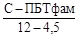 |
|
|
2 |
ПАЧУК |
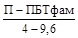 |
||
|
3 |
БАК-МЕШАЛКА С ПЛОСКИМ ДНИЩЕМ |
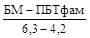 |
||
|
4 |
БАК-МЕШАЛКА С КОНУСНЫМ ДНИЩЕМ |
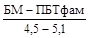 |
||
|
5 |
БАК-МЕШАЛКА СО СФЕРИЧЕСКИМ ДНИЩЕМ |
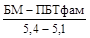 |
||
|
6 |
ВАННА ЭЛЕКТРОЛИЗА МЕДИ И ЦИНКА |
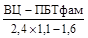 |
||
|
7 |
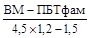 |
|||
|
8 |
СЕРНОКИСЛОТНОЕ ПРОИЗВОДСТВО |
ФОРБАШНЯ |
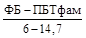 |
|
|
БАШНЯ I ПРМЫВНАЯ |
||||
|
БАШНЯ УВЛАЖНИТЕЛЬНАЯ |
||||
|
9 |
РЕАКТОР |
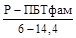 |
||
|
БАШНЯ II ПРОМЫВНАЯ |
||||
|
10 |
СБОРНИК К УВЛАЖНИТ. БАШНЕ |
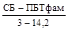 |
||
|
СБОРНИК К I ПРОМЫВНОЙ БАШНЕ |
||||
|
СБОРНИК КО II ПРОМЫВНОЙ БАШНЕ |
||||
|
11 |
ОТСТОЙНИК |
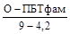 |
||
|
ПРИМЕЧАНИЯ: 1. УСЛОВИЕ ОБОЗНАЧЕНИЯ МАРОК АППАРАТОВ: - ПЕРВЫЕ БУКВЫ НАД ЧЕРТОЙ ОБОЗНАЧАЮТ НАИМЕНОВАНИЕ АППАРАТА (НАПРИМЕР, С - СГУСТИТЕЛЬ, ФБ - ФОРБАШНЯ И Т.Д.); - ВТОРАЯ ЧАСТЬ НАД ЧЕРТОЙ ОБОЗНАЧАЕТ ВИД ПОЛИМЕРБЕТОНА (ПБТфам - ПОЛИМЕРБЕТОН ТЯЖЕЛЫЙ НА ФУРАНОВОЙ СМОЛЕ); - ПОД ЧЕРТОЙ ПЕРВАЯ ЦИФРА ОБОЗНАЧАЕТ ДИАМЕТР АППАРАТА (D), ВТОРАЯ - ВЫСОТУ АППАРАТА (H) 2. ГЕОМЕТРИЧЕСКИЕ РАЗМЕРЫ АППАРАТОВ ПРИВЕДЕНЫ УСЛОВНО В КАЖДОМ КОНКРЕТНОМ СЛУЧАЕ. ФАКТИЧЕСКИЕ РАЗМЕРЫ АППАРАТА НАЗНАЧАЮТСЯ ПРИ РАЗРАБОТКЕ ПРОЕКТОВ. 3. НА ЭСКИЗЕ КРУПНОГАБАРИТНЫЕ АППАРАТЫ ПОКАЗАНЫ В СБОРНО-МОНОЛИТНОМ ВАРИАНТЕ. ПРИ ОСНАЩЕНИИ ПЛОЩАДКИ СТРОИТЕЛЬСТВА СРЕДСТВАМИ ПРИГОТОВЛЕНИЯ ПОЛИМЕРБЕТОНОВ И ИХ ТЕРМООБРАБОТКИ, АППАРАТЫ МОГУТ ВЫПОЛНЯТЬСЯ МОНОЛИТНЫМИ. |
||||
|
Наименование цеха |
№№ пп |
Наименование аппарата |
Состав среды в аппаратах, г/л |
Температура среды в аппарате, °С |
Состав внешней среды, мг/м3 |
Температура внешней среды, °С |
Относительная влажность внешней среды, % |
Степень агрессивности среды по отношен. к цем. бетону и металлу |
|
|
1 |
2 |
3 |
4 |
5 |
6 |
7 |
8 |
9 |
10 |
|
Цинковое |
Выщелачивательный цех |
1 |
Сгуститель |
H2SO4 - 0,5 ÷ 80 |
80 - 85 |
Газы Cl2 - 0,0001 |
+18 |
£ 75 |
Сильно-агрессивная |
|
Zn - 40 ÷ 140 |
ASH3 - 0,0005 |
-20 ÷ 36* |
|||||||
|
Cu - 0,1 ÷ 2 |
Аэрозоль H2SO4 |
||||||||
|
Fe - 2 ÷ 25 |
50 - 60* |
* Атмосферные осадки |
|||||||
|
Cl - до 0,5 |
|||||||||
|
F - до 0,1 |
|||||||||
|
Mn - до 10 |
|||||||||
|
2 |
Пачук |
H2SO4 - 2 ÷ 50 |
85 - 95 |
Газы Cl2 - 0,0001 |
+18 |
То же |
То же |
||
|
Cu - 0,1 - 2 |
ASH3 - 0,0005 |
-20 ÷ 30* |
|||||||
|
Fe - 5 ÷ 25 |
60 - 70* |
Аэрозоль H2SO4 |
|||||||
|
Zn - 40 ÷ 140 |
Возможные проливы. |
||||||||
|
* Атмосферные осадки |
|||||||||
|
3 |
Бак-мешалка с плоским днищем |
H2SO4 - 2 ÷ 200 |
85 - 95 |
Газы Cl2 - 0,0001 |
+18 |
£ 75 |
Сильно-агрессивная |
||
|
Zn - 40 ÷ 140 |
50 - 60* |
ASH3 - 0,0005 |
-20 ÷ 36 |
||||||
|
Cu - 1 ÷ 2 |
Аэрозоль H2SO4 |
||||||||
|
Fe - 2 ÷ 25 |
Возможные проливы. |
||||||||
|
Cl до 0,5 |
* Атмосферные осадки |
||||||||
|
F до 0,1 |
|||||||||
|
Mn до 10 |
|||||||||
|
4 |
Бак-мешалка с конусный днищем |
H2SO4 - 2 ÷ 200 |
85 - 95 |
То же |
То же |
То же |
То же |
||
|
Cu - 40 ÷ 140 |
50 - 60* |
||||||||
|
Fe - 1 ÷ 2 |
|
||||||||
|
Zn - 2 ÷ 25 |
|
||||||||
|
Cl до 0,5 |
|
||||||||
|
F до 0,1 |
|
||||||||
|
Mn до 10 |
|
||||||||
|
5 |
Бак-мешалка со сферическим днищем |
H2SO4 - 160 ÷ 175 |
90 - 95 |
- “ - |
- “ - |
- “ - |
- “ - |
||
|
Zn - 115 |
50 - 70* |
||||||||
|
Cu - 1,3 |
|
||||||||
|
Cd - 1,15 |
|
||||||||
|
Fe - 14,5 |
|
||||||||
|
Rs - 0,55 |
|
||||||||
|
Sb - 0,08 |
|
||||||||
|
Цинковое |
Электролитный цех |
6 |
Ванна электролиза цинка |
H2SO4 - 150 + 240 |
£ 60 |
Аэрозоль H2SO4 - 0,04 мг/л. |
+18 |
£ 75 |
Сильно-агрессивная |
|
Zn - 35 ÷ 160 |
HCl - 0,003 мг/л. |
||||||||
|
Cl - 100 ÷ 300 |
Пыль Zn, ZnO, Fe |
||||||||
|
F - 50 ÷ 150 |
Газы Cl2, SO4, Fe |
||||||||
|
Fe - 20 ÷ 150 |
|||||||||
|
Медное |
Сернокислотный цех |
7 |
Форбашня, башня I промывная, башня увлажнительная |
H2SO4 - 30 ÷ 75 |
£ 70* |
Туман H2SO4 |
-20 ÷ 30* |
£ 60 |
То же |
|
В орошающей кислоте |
- 0,05 % |
||||||||
|
AS £ 7 |
пары SO2 |
||||||||
|
F - 2 ÷ 15 |
|
||||||||
|
8 |
Реактор, башня II промывная |
То же |
То же |
То же |
То же |
То же |
- “ - |
||
|
9 |
Сборник к форбашне, сборник к I промывной башне, сборник ко II промывной башне |
H2SO4 - 30 + 75 |
£ 70 |
SO2 - 0,003 |
+18 |
£ 75 |
- “ - |
||
|
AS £ 7 |
Аэрозоль H2SO4 |
||||||||
|
F - 2 ÷ 15 |
|||||||||
|
Медное |
10 |
Отстойник |
H2SO4 - 30 + 75 |
£ 70 |
Аэрозоль H2SO4, SO2 |
+18 |
£ 75 |
Сильно-агрессивная |
|
|
AS - 7 |
|||||||||
|
F - 2 ÷ 15 |
|||||||||
|
Медное |
Электролитный цех |
11 |
Ванна электролиза меди |
H2SO4 - 115 ÷ 140 |
£ 80 |
Аэрозоль H2SO4 - 0,1 мг/л. |
То же |
То же |
То же |
|
Cu - 40 ÷ 456 |
|||||||||
|
Ni - 11 ÷ 27 |
Пыль CuSO4 |
||||||||
|
(H2SO4 - 96 %) |
Примечание: Данные, отмеченные (*) относятся к аппаратам, эксплуатирующимся вне здания.
|
Наименование |
№№ пп |
Наименование аппарата |
Гидростатическая нагрузка γ в тс/м3 |
Статическая нагрузка |
Динамические и импульсные воздействия |
Истираемость внутренней поверхности аппарата |
|
|
1 |
2 |
3 |
4 |
5 |
6 |
7 |
8 |
|
Цинковое |
ВЫЩЕЛАЧИВАТЕЛЬНЫЙ ЦЕХ |
1 |
Сгуститель |
Пульпа γ = 1,3 |
Собственный вес, вес устройства мешалки с крышкой (Р ~ 15 тс) |
Вращение мешалки со скоростью V = 0,12 об/мин |
Незначительная от движения пульпы |
|
|
|
2 |
Пачук |
Раствор γ = 1,5 |
Собственный вес, вес конструкции пачука с крышкой (~ 4,0 тс) |
Давление пара £ 2 ати |
Тоже |
|
|
|
3 |
Бак-мешалка с плоский днищем |
Раствор γ = 1,3 |
Собственный вес, вес устройства мешалки (~ 9 тс) |
Давление пара £ 2 ати |
Незначительная от вращения раствора |
|
|
|
4 |
Бак-мешалка с конусным днищем |
Раствор γ = 1,3 |
Собственный вес, вес устройства мешалки (~ 4,3 тс) |
Вращение вертикального вала V1 = 110 об/мин V2 = 55 об/мин |
То же |
|
|
|
5 |
Бак-мешалка со сферическим днищем |
Раствор γ = 1,3 |
Собственный вес, вес устройства мешалки со змеевиком (~ 9,2 тс) |
Вращение вертикального вала V1 = 110 об/мин V2 = 55 об/мин |
- « - |
|
Цинковое |
Электролитный цех |
6 |
Ванна электролиза цинка |
Электролит γ = 1,4 |
Собственный вес, вес электродов (~5,0 тс) |
Удары от опускающихся электродов |
Незначительная от движения электролита |
|
Медное |
Сернокислотный цех |
7 |
Форбашня, башня I промывная, башня увлажнительная |
- |
Собственный вес, вес разбрызгивающейся кислоты |
Разбрызгивание под давлением кислоты |
Незначительная от движения стекающей кислоты |
|
8 |
Реактор, башня II промывная |
- |
Собственный вес, вес насадки (~ 10 тс), вес раствора на насадке (~ 5,0 тc) |
То же |
То же |
||
|
9 |
Сборник к форбашне, сборник к I промывной башне, сборник ко II промывной башне |
Раствор γ £ 1,7 |
Собственный вес |
- |
- |
||
|
10 |
Отстойник |
Раствор γ = 1,5 Шлам γ = 2,0 |
Собственный вес, вес шлама (до половины) |
- |
- |
||
|
Электролитный цех |
11 |
Ванна электролиза меди |
Электролит γ = 1,3 |
Собственный вес, вес электродов (~ 15 тс) |
Удары от опускающихся электродов |
Незначительная от движения электролита |
4.1. Основные требования к подбору состава полимербетона:
чистота исходных материалов в соответствии с допускаемыми нормами (см. разд. 5 настоящей Инструкции):
стойкость в эксплуатационных средах компонентов состава (не ниже 0,9);
доступность и экономичность исходных материалов;
по возможности, минимальная токсичность и пожароопасность составляющих;
технологичность при переработке;
соответствие физико-механических свойств отвержденного полимербетона (прочность, упругоэластические свойства, проницаемость, деформативные свойства) внешним и внутренним воздействиям (см. разд. 9, 10 и 11 настоящей Инструкции);
минимальный расход связующего.
4.2. В качестве связующего полимербетона применяется фурфурол-ацетоновая смола марок ФАН или ФА (ТУ-6-05-1618-73).
4.3. Отвердителем полимербетона на смолах ФАМ или ФА является безводная бензолсульфокислота БСК (ТУ-6-14-25-74).
4.4. В качестве наполнителей и заполнителей используют кислотощелочестойкие искусственные и природные материалы:
щебень гранитный, крупностью 10 - 20 мм (ГОСТ 8267-75);
пески кварцевые, крупностью 0,5 - 6 мм (ГОСТ 8736-77);
мука андезитовая или помол кварцевого песка с удельной поверхностью F = 0,3 ÷ 0,5 м2/г.
Если технологические среды содержат соединения фтора, то в качестве наполнителей и заполнителей используют углеродосодержащие материалы (графитовый щебень, графитовый песок, графитовую муку). Конструкции в этих случаях армируются, как правило, стеклопластиковой или другой неметаллической арматурой.
4.5. Соотношение между составляющими полимербетона подбирается из расчета максимального расхода наполнителей и заполнителей. Наиболее плотная упаковка достигается при соотношении размеров смежных фракций D:d ³ 16.
4.6. Оптимальная удобоукладываемость смеси полимербетона определяется по конусу СтройЦНИЛа с осадкой от 2 до 5 см.
4.7. Ориентировочный состав полимербетона приведен в табл. 4. Состав полимербетона уточняется после перехода к новым видам заполнителей и наполнителей или при получении новых партий наполнителей и заполнителей.
|
Расход составляющих |
||
|
в % по весу |
в кгс на м3 полимербетона |
|
|
Фурфурол-ацетоновая смола ФАМ или ФА |
9 |
198 |
|
Бензолсульфокислота |
2 |
44 |
|
Мука (андезитовая, графитовая) |
10 |
220 |
|
Песок (кварцевый графитовый) |
25 |
550 |
|
Щебень (гранитный, графитовый) |
54 |
1188 |
4.8. Состав полимерраствора для выполнения стыков сборных элементов баковой аппаратуры приведен в табл. 5.
|
Расход составляющих |
||
|
в % по весу |
в кгс на м3 полимерраствора |
|
|
Фурфурол-ацетоновая смола ФАМ или ФА |
16,0 |
320 |
|
Бензолсульфокислота |
3,0 |
60 |
|
Мука |
24,0 |
480 |
|
Песок |
57,0 |
1140 |
4.9. Технология приготовления полимербетона (см. Рис. 1) включает операции:
подготовка компонентов (сушку наполнителей и заполнителей, плавление БСК, оттаивание смолы, если она хранится на открытом воздухе зимой);
загрузка расходных емкостей;
дозирование составляющих;
Рис. 1 Технологическая схема производства изделий из полимербетона и армополимербетона.
1 - приемное устройство для заполнителей; 2 - элеватор ленточный ЭЛГ-329; 3 - склад заполнителей; 4 - питатель дисковый ДТ-200; 5 - грохот; 6 - сушило барабанное СБ 1200/6000; 7 - холодильник барабанный 1000/8000; 8 - дробилка валковая ДТ-600/400; 9 - мельница струйная противоточная МСП-0,5; 10 - пневм отранспорт; 11 - склад смолы ФАМ; 12 - 13 - расходные емкости ФАМ и БСК; 14 - 15 - дозаторы заполнителей АВДИ-2400м и наполнителя АВДИ-1200м; 16 - 17 - дозаторы жидкости АВДЖ-2400 и АВДЖ-425/1200; 18 - 19 - питатели ленточный и винтовой; 20 - смеситель турбулентный СБ-81; 21 - бетоносмеситель С-951; 22 – бетоноукладчик; 23 - виброплощадка с подъемными рельсами; 24 - конвейер напольный; 25 - камера для термообработки изделий; 26 - опалубочная форма изделия.
приготовление в специальном смесителе мастики (смола + микронаполнитель + отвердитель);
приготовление в бетономешалке смеси заполнителей (песка и щебня);
выгрузка мастики в бетономешалку;
переманивание всех составляющих в бетономешалке.
4.10. Сушку наполнителей и заполнителей необходимо производить при температуре 80 - 100 °С. Длительность сушки определяется по остаточной влажности, составляющей не более 1 % для минеральной муки и 0,5 % для песка и щебня.
Остаточную влажность определяют на опытных навесках весом до 1 кгс по формуле:
где Ров - навеска в кгс с остаточной влажностью,
Рс - навеска в кгс с постоянным весом.
Режим сушки навески должен строго соответствовать производственному.
4.11. Плавление БСК необходимо производить при температуре 55 - 65 °С, при условиях, предотвращающих попадание воды, а также различных загрязнений в емкость с отвердителем.
4.12. В случае замерзания смолы (зимнее время), свойства ее не нарушаются. Для оттаивания не допускается использование открытого огня или теплоносителей с температурой нагрева выше 250 °С. Не допускается оттаивать паром непосредственным контактом его с замороженной смолой.
4.13. Перед загрузкой расходных емкостей убедиться в их чистоте и отсутствии влаги.
4.14. Дозирование материалов должно производиться по весу. Допускается дозирование по объему. В последнем случае дозаторы должны быть выверены по весу. Дозирование составляющих может производиться с применением серийных дозаторов, используемых при приготовлении цементного бетона. Точность дозирования по весу:
|
± 1 % |
|
|
наполнитель (мука) |
± 1 % |
|
заполнитель (щебень, песок) |
± 2 % |
Проверка точности дозирования материалов должна производиться не реже одного раза в смену.
Определение влажности и зернового состава заполнителей и наполнителей необходимо проводить не реже одного раза в смену и при переходе к новой партии.
4.15. Перед совмещением составляющих строго обращать внимание на:
качество компонентов (см. разд. 5 настоящей Инструкции);
температуру составляющих, которая допускается: для наполнителей, заполнителей, смолы - не выше 22 °С и для БСК - не выше 40 °С.
4.16. Приготовление полимербетонной смеси следует производить в две стадии:
а) приготовление мастики из мономера ФА (ФАМ) и микронаполнителя в скоростном турбулентном смесителе в течение 2 - 2,5 мин, затем в смесь вводят расплав катализатора (отвердителя) БСК (t = 35 ÷ 40 °С). Время переманивания - 1 мин. Одновременно в бетоносмесителе принудительного действия перемешиваются заполнители («сухая смесь» песка и щебня) в течение 2 минут;
б) получение полимербетонной смеси - совмещение мастики и «сухой» смеси в бетоносмесителе и совместное их переманивание в течение 2 - 2,5 мин.
Общее время цикла получения полимербетонной смеси должно составлять не более 5 - 7 мин.
Тип смесительного оборудования выбирается в зависимости от объема формуемого изделия и требуемой производительности производства.
4.17. Перемешивание полимербетона следует производить в смесителях принудительного действия (циклический смеситель, 2-х вальный смеситель непрерывного иди периодического действия).
Смесительное оборудование должно быть снабжено аварийным устройством для подачи воды в смесители при их внезапной поломке и других авариях, при которых необходимо остановить реакцию структурообразования полимера.
4.18. При приготовлении полимербетона необходимо соблюдать следующие условия:
нельзя оставлять в смесителях полимербетонную смесь более 20 - 30 мин;
после двух-трех замесов смеситель следует засыпать одним щебнем и очистить от налипшего полимербетона;
начинающий схватываться полимербетон нельзя применять в дело.
5.1. Контроль качества составляющих и готового полимербетона необходимо проводить на следующих этапах:
при поступлении материалов на склад;
перед приготовлением полимербетона;
при приготовлении полимербетона;
после приготовления полимербетона;
отвержденного полимербетона.
5.2. При поступлении материалов на склад проверяется наличие паспортов и их соответствие с Государственными стандартами и техническими условиями.
5.3. Перед приготовлением полимербетонов необходимо проверить влажность наполнителей и заполнителей и их чистоту, качество БСК и связующего.
5.4. Бензолсульфокислота (БСК) является гигроскопичным продуктом, активность которого резко падает при обводнении, засорении щелочными соединениями, активными металлами (мелкодисперсная сталь, цинк и т.д.).
Активность БСК периодически проверяется по методикам, указанным в ТУ. Оценку пригодности БСК, кроме правил, указанных в ТУ, следует определять следующим образом: полоски белой бумаги шириной 12 - 20 мм пропитать заведомо качественным мономером ФА или ФАМ. Снять с бумаги лишние капли смолы, после чего концами бумаги провести по БСК. В случае хорошего качества БСК, бумажки приобретут темно-красный цвет с последующим переходом в темно-фиолетовый до черного.
Для определения активности БСК можно также взвесить 50 г смолы и ввести 10 г заведомо качественной БСК, растворенной в ацетоне. При нормальной активности БСК смола через 10 - 15 мин. после введения БСК разогреется и начнет кипеть.
5.5. Качество смолы, кроме методов, указанных в ТУ, определяют на содержание воды. Для определения наличия воды смолу наливают в мерный стеклянный цилиндр и дают жидкости отстояться сутки. В случае присутствия в смоле воды, она отделяется на поверхности и легко отличается по цвету.
5.6. При приготовлении полимербетона необходимо прежде всего обращать внимание на температуру поступающих материалов (см. п. 4.15 настоящей Инструкции).
5.7. После приготовления полимербетона основное внимание необходимо обращать на удобоукладываемость, температуру саморазогрева и время отверждения. Качественный полимербетон должен разогреваться до +40 - 80 °С. При температурах саморазогрева выше и ниже этого интервала необходимо корректировать количество БСК.
5.8. Качество отвержденного полимербетона необходимо оценить по прочности и однородности.
5.9. Для контроля прочности следует изготавливать кубы размером 7´7´7 см в количестве не менее 5 образцов на каждый кубометр полимербетона. Отверждение образцов должно производиться в таких же условиях, что и конструкции (см. раздел 7 настоящей Инструкции).
5.10. Однородность полимербетонной смеси оценивается коэффициентом однородности, значение величины которого должно быть не менее 0,6.
6.1. Опалубка и опалубочные устройства для изготовления конструкций изделий баковой аппаратуры из полимербетона выполняются из металла или дерева.
6.2. Поверхность деревянной опалубки, контактирующей с полимербетоном, должна быть обшита металлом или пластиком (винипластом, полипропиленом, стеклопластиком).
6.3. Допуски размеров не должны превышать 0,05 % или 0,5 мм/м.
6.4. Опалубка для изготовления замкнутой или коробчатой формы изделий должна иметь подвижные вкладыши, обеспечивающие податливость от усадки при твердении полимербетона.
6.5. Податливость опалубки должна характеризоваться параметрами: усилие для перемещения элементов вкладыша от 5 до 20 кгс/см2 и деформации не менее 2 мм/м. При этом нижний предел усилия связан с фиксацией размеров вкладыша от давления свежеуложенного полимербетона и верхний - с прочностью полимербетона на разрыв.
6.6. Конструкция опалубки (элементы сборки и разборки, а также ограждающие) должна быть выполнена с учетом повышенных адгезионных свойств полимербетона к металлу, дереву и другим материалам. В частности, развитые или пространственные поверхности, по возможности, должны состоять из плоскостей.
6.7. Опалубка для изготовления конструкций из полимербетона для баковой аппаратуры должна иметь плотные примыкания ограждающих элементов, препятствующих протеканию связующего при виброуплотнении.
7.1. При организации производства изготовления баковой аппаратуры из полимербетона необходимо рассматривать его как химическое, несмотря на то, что по основным технологическим операциям оно близко к традиционному производству цементного бетона. Все требования по технологии для обеспечения высокого качества выпускаемых конструкций должны соблюдаться полностью. Все участки технологического процесса должны размещаться в помещениях с приточно-вытяжной вентиляцией; относительная влажность воздуха не должна превышать 60 %; температура воздуха в любое время года в цехе должна быть плюс 18 - 20 °С. Приготовление и укладка полимербетонной смеси при температуре окружающей среды ниже плюс 10 °С не допускается.
7.2. Технология изготовления изделий из полимербетона (см. Рис. 1) включает:
подготовку и сборку форм;
установку и закрепление арматуры (напрягаемой, ненапрягаемой) в соответствии с рабочими чертежами;
приготовление полимербетонной смеси;
укладку и уплотнение полимербетонной смеси;
тепловую обработку;
распалубку;
складирование готовых изделий.
7.3. Подготовка и сборка форм состоит из следующих операций: очистка формы; нанесение разделительного слоя на чистую поверхность; сушка разделительного слоя; приведение в рабочее положение и закрепление бортов, закладных деталей, установка арматуры.
Составы разделительного слоя:
I - парафин;
II - смесь парафина с солидолом или машинным маслом (1:1);
III - эмульсол;
IV - смесь эмульсола с графитом (1:1).
7.4. Поддоны и бортовая оснастка форм для изделий должны быть жесткими с тем, чтобы возможные искривления поверхности изделий не превышали допусков, предусмотренных техническими условиями на данные конструкции. Прогибы поддонов и бортов форм после заполнения их полимербетонной смесью при транспортировке или при размещении в камерах тепловой обработки не должны превышать половины величины допускаемых искривлений для соответствующих плоскостей конструкций.
7.5. Внутренние размеры форм после установки и закрепления бортовой оснастки должны быть в пределах минусовых допусков на размеры конструкций. Правильность сборки форм должна проверяться перед каждой формовкой.
7.6. Арматура и арматурные изделия устанавливаются и закрепляются в соответствии с требованиями рабочих чертежей и с требованиями раздела 8 настоящей Инструкции.
7.7. Приготовление полимербетонной смеси состоит из операций, указанных в разделе 4 настоящей Инструкции.
7.8. Укладку полимербетонной смеси следует производить сразу после окончания перемешивания. Смесь, уложенная через 20 - 30 мин. после окончания перемешивания, трудно уплотняется, а конструкции получаются с большим количеством дефектов.
7.9. Уплотнение полимербетона следует производить на вибростендах навесными или глубинными вибраторами со следующими характеристиками:
амплитуда колебаний А = 0,8 ÷ 1,0 мм;
частота колебаний v = 50 ÷ 60 Гц (3000 ÷ 3500 об/мин.);
тип колебаний - эллипсообразные или круговые.
Окончание вибрирования определяется по появлению на поверхности жидкой фазы. Время уплотнения не должно превышать 3 мин.
Для повышения эффективности уплотнения и получения гладкой поверхности, рекомендуется применять вибро- и пневмопригрузку щитом.
7.10. После виброформования конструкции должны быть выдержаны в цехе в течение 1,0 - 1,5 часов до достижения максимальной температуры саморазогрева (60 ÷ 70 °С).
7.11. Термообработку необходимо производить сразу же после достижения максимальной температуры саморазогрева.
Режим прогрева: подъем температуры с 60 °С до 80 °С - 1,5 часа, прогрев при 80 °С - 8 - 16 часов, охлаждение с 80 °С до 20 °С - со скоростью снижения температуры не более 5 - 7° в час.
Во избежание искривления конструкции, термообработку следует производить только в формах.
7.12. Распалубка должна производиться только после полного остывания конструкций в формах.
При распалубке следует выполнять следующие требования:
не допускать резких ударов;
при замыкании опалубки не применять какие-либо горелки и другие устройства, создающие нагрев выше 300 °С;
налипший на наружные элементы формы полимербетон удалять после извлечения изделий из формы.
7.13. При складировании готовых конструкций из полимербетона необходимо руководствоваться правилами:
при транспортировании и укладке не допускать ударов или волочения;
укладывать конструкции в сухом месте на деревянные прокладки;
при складировании в штабелях каждый ряд конструкций обязательно прокладывать деревянными рейками;
не допускать попадания влаги на складированные конструкции.
8.1. Контроль за качеством готовых конструкций должен осуществляться на стадии подбора составляющих, дозирования, перемешивания, уплотнения и твердения (см. раздел 5 настоящей Инструкции).
8.2. Кроме контроля качества, указанного в разделе 5, необходимо следить за:
соблюдением размеров и форм изделия;
качеством поверхности готовых изделий;
маркировкой изделий.
8.3. Допуски размеров готовых изделий должны составлять не более 0,5 мм/м.
8.4. При контроле форм обращать внимание на соответствие углов и конфигурации изделий. Отклонения (искривления, депланации и т.д.) от нормативных должны составлять не более 0,5 %.
8.5. Поверхность готовых изделий должна быть без крупных раковин (крупнее 5 мм), трещин, отколов углов и различного виды загрязнений (остатков разделительного слоя, налета известковых и других материалов основного или щелочного характера).
8.6. Готовые изделия должны иметь марку ОТК с обозначением вида партии конструкций и времени изготовления.
9.1. Качество полимербетона в значительной степени зависит от величины усадочных деформаций и связанных с ними внутренних усадочных напряжений, поэтому при расчете полимербетонных конструкций должны учитываться усадочные напряжения, возникающие в процессе структурообразования полимербетона по формуле
где Ymax - максимальная усадка (относительная) полимербетона
A - величина упругой относительной деформации (0,3 ÷ 0,4);
ν - коэффициент Пуассона;
ψ1 - коэффициент релаксации усадочных напряжений (0,8 ÷ 0,9).
При этом должно соблюдаться условие:
Если условие (4) не выполняется, то необходимо пересмотреть состав полимербетона и снизить количество связующего.
9.2. Массоперенос регламентирует толщину защитного слоя арматуры и при проектировании баковой аппаратуры должен учитываться в виде временной функции глубины проницаемости.
Временная зависимость глубины проницаемости определяется по формуле:
где
h∞ - глубина проницаемости при времени τ (сут) → ∞
w
- константа образца, равна 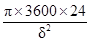
δ - толщина образца в см;
D - коэффициент диффузии в см2/сек (для обычных составов D = (6 ÷ 8) ´ 10-8 см2/сек., для составов с углеродосодержащими наполнителем и заполнителем D = (1,5 ÷ 2) ´ 10-8 см2/сек).
В формуле (5) принимают h∞ = 5 см.
Время, при котором агрессивная среда пройдет через защитный слой арматуры толщиной hτ £ 4 см, определяется решением уравнения (5) относительно τ
9.3. При расчете конструкции в стадии изготовления должны учитываться напряжения от температурных деформаций, определяемые по формуле
где σy - температурное напряжение в полимербетоне (кгс/см2);
Е0 - коэффициент пропорциональности (0,95);
tп, tв - температура саморазогрева в центре и на поверхности конструкции в °С (при температуре окружающей среды - 20 °С, tп = 30 ÷ 40 °С, tв = 50 ÷ 80 °С, минимальные цифры - для тонкостенных конструкций);
ν - коэффициент Пуассона (0,34 ÷ 0,4 при t = 60 ÷ 80 °С);
Ψ - коэффициент релаксации усадочных напряжений (0,6 ÷ 0,7).
при этом должно соблюдаться условие
Если условие (8) не соблюдается, то необходимо пересмотреть состав полимербетона и снизить количество связующего или изменить геометрическую форму конструкции таким образом, чтобы улучшить теплообмен с окружающей средой.
9.4. Стойкость полимербетонов на основе фурфурол-ацетоновых смол определяется прежде всего химической активностью связующего, наполнителей и заполнителей. Некоторые коррективы стойкости могут вносить отвердитель (БСК) и различные модифицирующие компоненты.
9.5. При разработке и подборе состава полимербетона для баковой аппаратуры необходимо руководствоваться следующими положениями: фурфурол-ацетоновые смолы являются стойкими ко всем кислотам, за исключением окисляющих кислот (азотная, хромовая и др.) концентрации свыше 10 %, ко всем щелочам (за исключением гипохлоридов), к растворам солей, умеренно стойкими в воде и не стойкими в ацетоне.
Физические свойства полимербетонов характеризуются величинами, приведенными в табл. 6.
|
Един. изм. |
Показатели |
|
|
Твердость по Бриннелю |
кгс/см2 |
41 |
|
Коэффициент Пуассона |
- |
0,21 ÷ 0,25 |
|
Истираемость полузакрепленным абразивом |
% |
40 |
|
Теплопроводность |
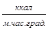 |
0,5 ÷ 0,75 |
|
Усадка объемная |
% |
0,3 |
|
Усадка линейная |
“ |
0,1 |
|
Водопоглощение (24 часа) |
“ |
0,17 |
|
Термостойкость |
град. |
170 |
|
Морозостойкость свыше |
циклы |
300 |
|
Температурный коэффициент линейного расширения |
1/°С |
(12 ÷ 20) ´ 10-6 |
9.6. Наполнители и заполнители должны подбираться в соответствии с требованиями по качеству (раздел 5) и с учетом вида агрессивной среды.
9.7. Стойкость в агрессивных средах оценивается коэффициентом условия работы (mx), представляющим отношение прочности полимербетона после экспозиции в средах к исходной прочности. Значения величин коэффициентов условий работы (mx) при воздействии химически агрессивных сред приведены в табл. 7. Коэффициенты условий работы (mx) для полимербетонов с графитовыми наполнителями и заполнителями даны в табл. 8.
|
Концентрации в % до: |
Коэффициент условия работы |
|
|
1 |
2 |
3 |
|
Минеральные кислоты: |
|
|
|
серная |
70 |
1 |
|
“ |
85 |
0,9 |
|
соляная |
40 |
1 |
|
фосфорная |
5 |
0,75 |
|
Органические кислоты: |
|
|
|
молочная, олеиновая |
85 |
1 |
|
лимонная |
10 |
1 |
|
уксусная |
5 |
1 |
|
Соли и основания: |
|
|
|
аммиак |
25 |
1 |
|
едкий натр |
50 |
1 |
|
углекислый натрий |
20 |
1 |
|
Хлористые растворы солей металлов: |
|
|
|
железа, калия, кальция, магния, натрия, цинка |
100 |
1 |
|
Растворители: |
|
|
|
анилин, ацетон, бензол, спирты, скипидар, толуол, фенол |
100 |
1 |
|
Газы: |
|
|
|
хлор, углекислый газ, сероводород, сероуглерод, хлористый водород |
100 |
1 |
|
формальдегид |
50 |
1 |
|
Температура среды в °С |
Концентрация среды в % |
Коэффициент условия работы |
|
|
1 |
2 |
3 |
4 |
|
Вода |
20 |
- |
0,85 |
|
|
80 |
- |
0,85 |
|
Серная кислота |
20 |
- |
0,85 |
|
|
² |
5 |
0,95 |
|
|
² |
10 |
0,95 |
|
|
² |
30 |
0,94 |
|
|
² |
60 |
0,90 |
|
|
² |
80 |
0,5 |
|
|
80 |
1 |
0,9 |
|
|
² |
5 |
0,92 |
|
Серная кислота |
80 |
10 |
0,9 |
|
|
² |
30 |
0,9 |
|
|
² |
60 |
0,7 |
|
|
² |
80 |
- |
|
Соляная кислота |
20 |
1 |
0,95 |
|
|
² |
5 |
0,96 |
|
|
² |
10 |
0,97 |
|
|
² |
30 |
0,95 |
|
|
80 |
1 |
0,95 |
|
|
² |
5 |
0,94 |
|
|
² |
10 |
0,92 |
|
|
² |
30 |
0,92 |
|
Азотная кислота |
20 |
1 |
0,85 |
|
|
² |
5 |
0,8 |
|
|
² |
10 |
0,70 |
|
|
² |
30 |
0,45 |
|
|
80 |
1 |
0,5 |
|
|
² |
5 |
не стоек |
|
|
² |
10 |
² |
|
|
² |
30 |
² |
|
Едкий натр |
20 |
10 |
0,85 |
|
|
² |
5 |
0,85 |
|
|
² |
10 |
0,85 |
|
|
² |
30 |
0,9 |
|
|
² |
60 |
0,85 |
|
Растворы солей, независимо от концентрации: |
|
|
|
|
сульфаты |
20 - 80 |
- |
0,8 |
|
хлориды (галогены) |
20 - 80 |
- |
0,9 |
|
нитраты |
20 - 80 |
- |
0,7 |
|
фосфаты |
20 - 80 |
- |
0,8 |
|
Ацетон |
20 |
- |
0,3 |
|
|
80 |
- |
не стоек |
|
Толуол |
20 |
- |
0,8 |
|
|
80 |
- |
0,8 |
|
Стирол |
20 |
- |
0,8 |
|
|
80 |
- |
0,8 |
|
Бензол |
20 |
- |
0,95 |
|
|
80 |
- |
0,9 |
|
Минеральное масло |
20 |
- |
0,9 |
|
|
80 |
- |
0,9 |
|
Метиловый спирт |
20 |
- |
0,6 |
|
|
80 |
- |
0,4 |
|
Сероуглерод |
20 |
- |
0,75 |
|
|
80 |
- |
0,7 |
|
Аммиак водный |
20 |
- |
0,85 |
|
|
80 |
- |
0,8 |
10.1. Прочностные характеристики полимербетонов зависят от степени полимеризации, вида и количества наполнителей и заполнителей, количества отвердителя, режима отверждения, характера внешних силовых воздействий и других факторов.
10.2. Основными характеристиками полимербетона являются
его проектные марки по прочности на сжатие 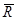
10.3. Нормативные сопротивления полимербетона при сжатии ( 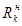 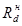 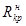 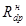
для кратковременного сопротивления -
для длительного сопротивления -
10.4. Коэффициент безопасности по бетону равен 1,3. Численные значения величин расчетных сопротивлений должны при этом удовлетворять следующим условиям:
для кратковременного сопротивления -
для длительного сопротивления -
10.5. Модуль упругости (Eo)
устанавливают с требуемой обеспеченностью (0,95) при уровне кратковременного
прикладываемого напряжения, составляющего 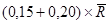
где
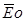
10.6. Механические характеристики полимербетонов, рекомендуемых для изготовления баковой аппаратуры, приведены в табл. 9. Эти характеристики отвечают нормальным температурно-влажностным условиям среды (температура 20 °С, влажность 60 %) в отвержденных изделиях по режиму, указанному в п. 7.11 настоящей Инструкции.
Механические характеристики, приведенные в табл. 9, должны корректироваться путем введения в расчет коэффициентов условий работы n-бетона, учитывающих воздействие: агрессивной среды (mx) - по табл. 7 и 8; повышенной температуры (mt) - по табл. 10; влажности (mв) - по табл. 11.
Примечание:
При расчете по II-ой группе предельных состояний
(образование трещин, определение деформаций и др.) нормативные значения величин
сопротивлений 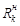 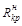
|
Условные обозначения |
Един. измер. |
Величина характеристики |
|
|
1 |
2 |
3 |
4 |
|
Объемный вес |
γ |
кгс/м3 |
2300 |
|
Проектная марка по прочности на сжатие |
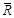 |
кгс/см2 |
700 |
|
Проектная марка по прочности на растяжение |
|
То же |
60 |
|
Нормативное кратковременное сопротивление сжатию |
|
“ |
440 |
|
Нормативное длительное сопротивление сжатию |
|
“ |
280 |
|
Расчетное кратковременное сопротивление сжатию |
Rk |
“ |
340 |
|
Расчетное длительное сопротивление сжатию |
Rd |
“ |
216 |
|
Нормативное кратковременное сопротивление растяжению |
|
“ |
35 |
|
Расчетное длительное сопротивление растяжению |
|
“ |
15 |
|
Расчетное кратковременное сопротивление растяжению |
Rkp |
“ |
23,3 |
|
Расчетное длительное сопротивление растяжению |
Rdp |
кгс/см2 |
10 |
|
Модуль упругости |
Eo |
“ |
1,8´105 |
|
Предельная длительная сжимаемость |
Ed |
- |
3,5´10-3 |
|
Предельная длительная растяжимость |
Ekp |
- |
0,5´10-3 |
|
Коэффициенты условий работы n-бетона mt |
||
|
при сжатии |
при растяжении |
|
|
20 |
1,0 |
1,0 |
|
40 |
0,9 |
0,8 |
|
60 |
0,8 |
0,7 |
|
80 |
0,7 |
0,6 |
|
100 |
0,5 |
0,4 |
|
Коэффициенты условий работы n-бетона mв |
||
|
при сжатии |
при растяжении |
|
|
Постоянное воздействие относительной влажности 60 % |
1,0 |
1,0 |
|
Относительная влажность переменная в пределах 50 - 90 % |
0,7 |
0,6 |
|
Постоянное водонасыщение |
0,6 |
0,4 |
Примечание: для составов с графитом значение mв повышается
10.7. При учете постоянных, длительных и кратковременных нагрузок расчетные или нормативные (для II-ой группы предельных состояний) кратковременные сопротивления полимербетона умножаются на коэффициенты, определяемые по следующим формулам:
при сжатии -
(18)
(19)
при растяжении -
(20)
(21)
где Ykн и Yk - усилия от воздействия кратковременных соответственно нормативных (с коэффициентами перегрузок n = 1) и расчетных (с коэффициентами перегрузок n > 1) нагрузок, определяемых для принятого сочетания нагрузок в соответствии с указаниями п. 10.8 настоящей Инструкции;
Yн и Y - усилия от воздействия соответственно нормативных и расчетных полных нагрузок, определяемых для принятого сочетания нагрузок, в соответствии с указаниями п. 10.8 настоящей Инструкции.
10.8. Величины расчетных нагрузок (воздействий), значения коэффициентов сочетаний, а также разделение нагрузок, в зависимости от продолжительности действия, на постоянные и временные (длительные, кратковременные, особые) должны приниматься в соответствии с требованиями главы СНиП II-6-74. При этом порядок учета нагрузок при расчете армополимербетонной конструкции по предельным состояниям второй группы должен приниматься в соответствии с указаниями пп. 1.13, 1.17 и 1.21 главы СНиП II-21-75, а также с учетом следующих дополнений к требованиям главы СНиП II-6-74:
а) при определении величины длительно действующих нагрузок из состава временных нагрузок следует выделять их длительно действующую часть, в частности:
из снеговых нагрузок - 80 %,
из нагрузок, продолжительность действия которых находится в пределах от 1 до 10 суток - 60 %,
из ветровых - 30 %;
б) при расчете армополимербетонных конструкций из состава временных нагрузок и воздействий следует выделять кратковременные, продолжительность действия которых менее 1 часа; к ним относятся, в частности, следующие нагрузки:
70 % ветровой нагрузки,
40 % нагрузки от кранов,
20 % снеговой нагрузки,
100 % нагрузки сейсмической и аварийной.
10.9. Вводимые в расчет значения величин нормативных (, ) или расчетных (Rc, Rp) сопротивлений полимербетона вычисляют с учетом указаний п. 10.6 и коэффициентов j по следующим формулам:
где m - для формул (22) и (23) коэффициент условия работы принимается в соответствии с примечанием к п. 10.6 настоящей Инструкции.
10.10. Расчетные длительные деформации при сжатии Ed (предельная сжимаемость) и при растяжении Edp (предельная растяжимость), приведенные табл. 9, корректируются в соответствии с указаниями п. 10.6 путем деления табличных значений величины Ed и Edp на произведения коэффициентов условий работы.
Примечание: При совместном действии температуры, химических реагентов и влаги характеристики Ed и Edp полимербетона корректировать только за счет коэффициента условия работы материала при повышенной температуре (mt табл. 10).
10.11. Величины относительных деформаций полимербетона при сжатии (Ec) и при растяжении (Ep), вводимые в расчет устанавливаются по формулам, соответственно:
(26)
(27)
где коэффициент j определяется по формулам п. 10.7 настоящей Инструкции.
11.1. Армополимербетоны, подвергающиеся воздействию агрессивных сред, могут снизить свою стойкость вследствие снижения плотности материала и коррозии стальной арматуры.
Снижение качества полимербетона может происходить как от коррозионного воздействия агрессивных сред, так и от набухания.
Коррозия арматуры армополимербетона при воздействии агрессивных сред обуславливается, в основном, недостаточной плотностью защитного слоя n-бетона.
Очаги увлажнения на наружных поверхностях свидетельствуют о просачивании материала и служат первыми признаками потери эксплуатационной пригодности бакового аппарата.
Основным мероприятием, обеспечивающим продолжительную работу бакового аппарата из полимербетона, является создание высокой плотности и однородности материала, которые достигаются в процессе изготовления конструкции, укладки бетона, при его уплотнении, последующем отверждении и тепловой обработке.
11.2. Дефекты типа волосных трещин, раковин, локальных отслоений или разрыхлений не должны иметь место в защитном слое, толщина которого должна быть не менее 30 мм (с внутренней стороны бака) и не менее 20 мм (с наружной стороны).
11.3. Для обеспечения нормированной толщины защитного слоя необходимо изготавливать специальные фиксаторы из полимербетона (состав полимербетона для фиксаторов - тот же, что и для изготовления баковой аппаратуры).
Фиксаторы из полимербетона закрепляются на арматурных стержнях. Количество фиксаторов выбирается в зависимости от конфигурации арматуры, обеспечивающее надежность фиксирования толщины защитного сдоя при условии вибрации конструкции.
Не допускается фиксировать арматуру в опалубке с помощью подливки полимербетона.
11.4. Для армирования емкостей из полимербетона в качестве ненапрягаемой арматуры должна применяться арматурная сталь не выше класса А-III. Арматурную сталь классов А-I и В-I следует применять только в сварных каркасах и сетках. Диаметр стержней или проволок должен быть не менее 4 мм.
При изготовлении бакового аппарата из монолитного сталеполимербетона арматурный каркас его должен представлять замкнутую пространственную систему с надежной связью в местах стыковки стержней и каркасов. Плоские и пространственные каркасы должны быть, как правило, сварными.
11.5. Если толщина стенки емкости δ ³ 120 мм, то ее следует снабжать двойной арматурой из сварных сеток, причем, диаметр стержней, образующих сетки, должен быть не более 8 мм и не менее 4 мм. Размер ячейки сетки рекомендуется назначать в пределах от 100´100 мм до 250´250 мм.
Арматуру необходимо надежно закреплять, обеспечивая требуемую толщину защитных слоев (см. пп. 11.2, 11.3) и свободный проход бетонной смеси при изготовлении конструкции и в процессе уплотнения (вибрирования) полимербетона.
11.6. Применение стальных закладных деталей с выходом на поверхности конструкции баковой аппаратуры без гарантийной защиты их от воздействия агрессивных источников запрещается.
11.7. При применении напрягаемой стальной арматуры для емкостей из полимербетона следует руководствоваться указаниями п. 11.8. Необходимо при этом обеспечивать надежную анкеровку напрягаемой арматуры и гарантийную защиту анкерных устройств от коррозии.
11.8. В качестве напрягаемой арматуры следует предусматривать арматурную сталь классов А-IV, А-V, Вр-II, В-II, К-7, отвечающую требованиям соответствующих государственных стандартов. Характеристики арматуры следует принимать согласно пп. 2.26 - 2.30 главы СНиП II-21-75. Диаметр отдельных стержней и проволок (в том числе, проволок, образующих канатную спиральную арматуру) должен быть не менее 4 мм. При конструировании предварительно-напряженных элементов следует руководствоваться дополнительными указаниями пп. 5.53 - 5.62 главы СНиП II-21-75.
Применение стержневой термически упрочненной стальной арматуры не допускается.
Применение проволочной арматуры диаметром менее 4 мм должно быть специально обосновано и проверено опытными данными.
11.9. При изготовлении бакового аппарата допускается применять напрягаемую стеклопластиковую арматуру (СПА), обращая особое внимание на обеспечение сцепления ее с окружающим полимербетоном, в особенности, при воздействии повышенных температур.
Физико-механические характеристики стеклопластиковой арматуры приведены в табл. 12.
Примечание: Рабочую стеклопластиковую арматуру следует применять только с предварительным напряжением. В отдельных случаях, в малогабаритных баках и аппаратах при специальном технико-экономическом обосновании, допускается применение ненапрягаемой СПА для предотвращения потери целостности неармированных полимербетонных элементов при разрушении.
|
Условные обозначения |
Един. изм. |
Величина характеристики |
|
|
1 |
2 |
3 |
4 |
|
Объемный вес |
γ |
кгс/м3 |
1900 |
|
Среднеарифметическое значение кратковременного разрыва |
|
кгс/м2 |
14500 |
|
Кратковременное нормативное сопротивление растяжению (с обеспеченностью 0,98) |
|
то же |
12500 |
|
Длительное нормативное сопротивлению растяжению |
|
кгс/см2 |
8100 |
|
Модуль упругости |
|
то же |
500000 |
|
Расчетная кратковременная прочность при растяжении |
Rka |
“ |
8000 |
|
Расчетная длительная прочность при растяжении |
Rda |
“ |
5200 |
|
Длина зоны анкеровки в полимербетоне ФАМ |
la |
см |
25 |
|
Длина зоны передачи напряжений для напрягаемой арматуры без анкеров |
lnн |
см |
30 |
|
Температурный коэффициент линейного расширения |
aa |
1/°С |
5,8´10-6 |
Примечания: 1. Механические характеристики, приведенные в табл. 12, соответствуют нормальным температурно-влажностным условиям среды.
2. Расчетные сопротивления стеклопластиковой арматуры при расчете конструкций по предельному состоянию первой и второй группы определяются по формуле
где: Ка - коэффициент безопасности стеклопластиковой арматуры, принимаемый равным:
при расчете по предельным состояниям первой группы
при ξ ³ ξR - 1,3;
при ξ < ξR - 1,55;
при расчете по предельным состояниям второй группы - 1,0.
11.10. При одновременном учете постоянных, длительных и кратковременных нагрузок сопротивление стеклопластиковой арматуры растяжению, вводимое в расчет конструкции, следует определять исходя из следующих условий:
а) при значении величины расчетного усилия Удл от совместного воздействия постоянных и длительных нагрузок (с коэффициентами перегрузок n > 1 для предельных состояний первой группы, или n £ 1 для предельных состояний второй группы) удовлетворяющей условию
где: У - усилие от воздействия всех нагрузок с учетом невыгодного сочетания их;
в качестве расчетного сопротивления СПА следует принимать
Rda = 5200 кгс/см2 (при n > 1) или Rнka = 8100 кгс/см2 (при n = 1), (см. табл. 12).
б) если условие (28) не выполняется, то в расчет вводят следующие расчетные сопротивления для предельных состояний:
первой группы
второй группы
Примечание: Установление длительных (Удл) и кратковременных (Ук) нагрузок следует производить в соответствии с указаниями п. 10.8 настоящей Инструкции.
11.11. Расчетные сопротивления стеклопластиковой арматуры снижаются путем умножения на соответствующие коэффициенты условия работы ma, приведенные в табл. 13.
|
Факторы, обуславливающие введение коэффициентов условий работы СПА |
Коэффициенты условий работы стеклопластиковой арматуры |
|
|
Условные обозначения |
Значения коэффициентов |
|
|
1. Воздействие повышенных температур: |
|
|
|
а) кратковременное нагревание в сухом состоянии со скоростью не более 2 °С в мин. до температуры |
|
|
|
80 °С |
mat |
0,95 |
|
100 °С |
|
0,90 |
|
150 °С |
|
0,85 |
|
200 °С |
|
0,80 |
|
б) длительное действие температуры 80 °С |
|
0,90 |
|
в) нагревание в полимербетоне ФАМ со скоростью 5 °С в мин. до температуры 80 °С |
|
0,45 |
|
г) сопротивление сцеплению при прогреве до 80 °С |
mасц |
0,80 |
|
2. Воздействие агрессивных сред при эксплуатации: |
|
|
|
а) воды |
max |
0,80 |
|
б) растворов кислот |
|
0,70 |
|
в) растворов солей |
|
0,80 |
Примечания: 1. При совместном действии различных агрессивных факторов коэффициенты условия работы принимаются по опытным данным.
2. При охлаждении арматуры до нормальной температуры сопротивления СПА восстанавливаются
11.12. Предварительное напряжение СПА осуществляется механическим способом. Мгновенная передача усилия обжатия на полимербетон для стеклопластиковой арматуры периодического профиля не допускается. Другие данные о применении напрягаемой СПА приведены в разделе 15 настоящей Инструкции.
Примечание: Допускается при соответствующем обосновании совместное применение стальной и стеклопластиковой арматуры, при этом оба вида или один из них можно подвергать предварительному напряжению.
В расчетно-конструктивном отношении баковый аппарат представляет, в большинстве случаев, пространственную тонкостенную многократно статически неопределимую систему. Учитывая при этом многообразие внешних и внутренних воздействий на конструкцию (силовые воздействия, влияние контрастов среды, изменение реологических свойств материалов и пр.), выявление достоверной картины невыгодного распределения усилий в ней является задачей сложной. В таких случаях анализируются различные расчетные схемы от простейших до самых сложных, определяя как частные величины внутренних усилий, так и максимально возможные их значения, обусловленные сочетанием или комбинацией различного рода и характера воздействий на конструкцию.
Вследствие разнообразия конструктивных форм баковой аппаратуры (см. раздел 2 настоящей Инструкции) расчетные схемы их, как простейшие, так и сложные, в одних случаях будут внешне сходными, а в других - принципиально различными.
Определение усилий в аппаратах производят в соответствии с методами расчета оболочек строительной механики. Однако, учитывая особые условия эксплуатации рассматриваемых конструкций, в частности, химически агрессивные среды, большие температурные перепады, в результате расчета целесообразно вносить соответствующие коррективы, имея в виду то обстоятельство, что армополимербетон обладает выраженными реологическими свойствами. При этом необходимо особое внимание уделять выявлению усилий, возникающих в конструкции вследствие проявления краевых эффектов.
Выполненные расчеты систематизируются и отбираются наиболее невыгодные значения величин усилий по наиболее характерным сечениям (полям, точкам, узлам сопряжений). Должны быть выделены значения усилий, отвечающие нормативным (с коэффициентами перегрузок n = 1) и расчетным (при n > 1) нагрузкам и воздействиям на баковый аппарат.
*) В настоящем и последующих разделах приведены расчетные формулы для прямоугольных сечений, которые наиболее характерны для баковой аппаратуры; ширину сечения следует принимать в = 100 см.
Расчет по образованию трещин, нормальных к продольной оси элемента.
13.1. Если изделие подвергается тепловой обработке, то влияние усадочных напряжений, возникающее в процессе структурообразования полимербетона (см. п. 9.1), не учитывается и оценка трещиностойкости нормальных сечений производится по следующим формулам:
при осевом растяжении
при изгибе и внецентренном приложении внешнего усилия
13.2. При учете влияния усадочных деформаций оценку сопротивления материала образованию нормальных трещин в нем производят по следующим формулам:
при осевом растяжении -
при изгибе и внецентренном приложении внешнего усилия -
где sy - величина усадочных напряжений в полимербетоне, определяемая по формуле (2) настоящей Инструкции;
Ку - коэффициент, уменьшающий резерв растяжимости полимербетона (вследствие усадки материала) и выявляемый из опыта (его величину следует принимать не более 0,6).
13.3. Трещиностойкость нормальных к продольной оси элемента сечений обеспечивается при выполнении условий:
N и M - максимальные величины усилий от воздействия нормативных внешних нагрузок или температурных перепадов, а также их сочетаний в рассматриваемом сечении, выявляемые из расчета бакового аппарата;
е - расстояние от точки приложения внешней продольной силы N до равнодействующей в сжатой зоне сечения; это расстояние определяется по формуле
В формуле (38) знак минус соответствует внецентренному сжатию, а плюс - внецентренному растяжению.
Расчет по образованию трещин, наклонных к продольной оси элемента.
13.4. Расчет по образованию наклонных к продольной оси элемента трещин следует производить по главным площадкам (главным осям) в наиболее опасных местах.
Величины мембранных усилий на главных площадках определяются по следующим формулам:*)
*) Величины усилий в формулах (39) и (40) следует устанавливать с помощью ЭВМ.
(39)
(40)
где: N1,2 - мембранные усилия на главных площадках;
M1,2 - главные изгибающие моменты;
Nx, Ny, Txy - соответственно нормальные и сдвигающие усилия на площадках, параллельных местной системе координат (при расшифровке машинного текста);
Mx, My, Mxy - изгибающие и крутящие моменты в местной системе координат (при расшифровке машинного текста).
Трещиностойкость сечения по главной площадке обеспечивается при соблюдении условия
(41)
где sгл р - максимальное напряжение растяжению по главной площадке, вычисляемое по формуле
(42)
Примечания: 1. Величины усилий формул (39) и (40), устанавливаемые с помощью ЭВМ, имеют обычно размерность тс/м2 (усилия N) и тсм/п. м (усилия М), что следует иметь в виду при использовании формулы (42).
2. Угол наклона в радианах между N1 и осью Х1 определяется по формуле
3. Угол наклона в радианах между М1 и Х1 определяется по формуле
4. В расчет на совместное воздействие усилий N1,2 и M1,2 вводят площадку (сечение) единичной ширины со средним углом наклона, равным
Расчет по прочности сечений, нормальных к продольной оси элемента.
13.5. При расчете по прочности нормальных сечений необходимо вначале определить ξR - граничную относительную высоту сжатой зоны по формуле
где sa - напряжение в растянутой арматуре, принимаемое равным расчетному сопротивлению Ra при отсутствии предварительного напряжения.
13.6. При наличии в сечении сжатой и растянутой зон расчетную относительную высоту сжатой зоны определяют по следующим формулам (см. рис. 2):
для изгибаемых элементов при сечении с одиночной арматурой
(44)
для изгибаемых элементов при сечении с двойной арматурой
(45)
Рис. 2 Схемы усилий при расчете по прочности
а - с двойной ненапрягаемой и одиночной напрягаемой арматурой, б - с двойной ненапрягаемой и двойной напрягаемой арматурой, в - двойной напрягаемой арматурой
для внецентренно-сжатых и внецентренно-растянутых элементов
где N - продольная сила от внешних расчетных нагрузок; в формуле (46) знак плюс при N принимается если усилие N сжимающее, минус - при внецентренном растяжении.
13.7. Расчет по прочности сечений, нормальных и продольной оси элемента, производят при ξ £ ξR, исходя из следующих условий:
для изгибаемых элементов прямоугольного сечения с одиночной арматурой
(47)
для внецентренно-сжатых и внецентренно-растянутых элементов при сечении с одиночной арматурой
(48)
для изгибаемых элементов при сечении с двойной арматурой
(49)
для внецентренно-сжатых и внецентренно-растянутых элементов при сечении с двойной арматурой
(50)
где M - максимальный изгибающий момент от внешних расчетных нагрузок или температурных воздействий, а также от их сочетаний, устанавливаемый в соответствии с указаниями, изложенными в разделе 12 настоящей Инструкции;
е - расстояние от точки приложения продольной силы до центра тяжести растянутой арматуры, определяемое по формуле
Формулы (47) - (50) настоящего пункта могут применяться лишь при соблюдении условия
Примечание: Если прочность сечения без учета арматуры сжатой зоны окажется не ниже, чем с учетом этой арматуры, то вторыми слагаемыми в формулах (49) и (50) пренебрегают; в таких случаях величину ξ следует определять как для сечений с одиночной арматурой, при этом должно соблюдаться условие
(53)
13.8. При невыполнении условия (52) граница перехода от полностью сжатого к сжато-растянутому сечению выявляется в следующем порядке:
а) из уравнения равновесия при предельной высоте сжатой зоны полимербетона и при усилии растяжения равном нулю (рис. 3), определяется величина продольной силы по формуле
(54)
б) вычисляют эксцентриситет приложения силы по формуле
(55)
в) если имеет место неравенство
то сечение в предельном состоянии будет иметь сжатую и растянутую зоны; при невыполнении одного из условий (56), сечение будет полностью, но неравномерно сжатым (е - расстояние от точки приложения усилия N до центра тяжести растянутой арматуры, рис. 3)
Рис. 3. Схема усилий в поперечном сечении армополимербетонного элемента при установлении границы перехода от полностью сжатого к сжато-растянутому сечению.
13.9. Если эксцентриситет eo продольного усилия не превышает величины случайного эксцентриситета (1/600 расчетной длины элемента), то расчет несущей способности сжатого элемента следует производить из условия
где N - продольное усилие от внешних нагрузок, при неблагоприятном сочетании их, определяемое в соответствии с п. 10.8 настоящей Инструкции.
Остальные обозначения величин формулы (57) те же, что и в вышеприведенных формулах. Если EcEa ³ Ra то в формуле (57) принимают EcEa = Ra
Коэффициент армирования поперечного сечения продольной арматурой следует назначать таким, чтобы величина его удовлетворяла условию
(58)
где Rk, Rd, Ed и Eo - принимаются по табл. 9 настоящей Инструкции без учета влияния коэффициентов условий работы
13.10. Расчет по прочности центрально-растянутых элементов производится из условия
Армирование элементов должно выполняться в соответствии с конструктивными требованиями главы СНиП II-21-75.
13.11. Расчет по прочности сечений, нормальных к продольной оси элемента, внецентренно растянутых элементов, когда внешняя продольная сила приложена в пределах контура сечения (между центрами арматуры А и А'), производится из следующих условий:
Расчет по прочности сечений, наклонных к продольной оси элемента
13.12. При расчете по прочности сечений, наклонных к продольной оси элемента на действие поперечной силы следует руководствоваться соответствующими указаниями главы СНиП II-21-75, при этом размеры поперечного сечения должны назначаться такими, чтобы удовлетворялось условие
где Q - поперечная сила в рассматриваемом сечении от воздействия нагрузок, при неблагоприятном сочетании их с учетом коэффициентов перегрузок n > 1.
Расчет по прочности сечений, наклонных к продольной оси элемента, производят при соблюдении условия
где jp - коэффициент, определяемый по формуле (21) настоящей Инструкции, при этом во всех случаях значение величины этого коэффициента для условия (63) принимается не более 0,7; в формуле (21) Уk = Qk и У = Q
Если условие (63) не соблюдается, то поперечная арматура определяется конструктивными требованиями (см. пп. 5.26, 5.27 главы СНиП II-21-75).
Расчет по прочности по сжатым главным площадкам допускается производить, исходя из следующего условия
где Rc - расчетное сопротивление полимербетона сжатию, определяемое по формуле (24) настоящей Инструкции;
sгл с - максимальное сжимающее напряжение по главной площадке, устанавливаемое по формуле
(65)
где N1,2; M1,2 - мембранное усилие и главные изгибающие мембранные моменты по главной площадке, определяемые в соответствии с указаниями п. 13.4 (см. примечания).
14.1. Для предварительно-напряженных конструкций баковой аппаратуры следует применять полимербетоны с расходом смолы не более 12 % по весу.
14.2. Поверхность напрягаемой арматуры должна иметь периодический профиль, а диаметр отдельных стержней должен быть не менее 4 мм.
14.3. Величину контролируемого напряжения (без учета потерь) для напрягаемой арматуры следует назначать в соответствии с указаниями п. 1 24 главы СНиП II-21-75.
Натяжение арматуры можно осуществлять различными способами, обеспечивающими равномерность и заданный уровень натяжения.
14.4. Обжатие полимербетона напрягаемой арматурой следует производить после тепловой обработки и охлаждения конструкции (температура не должна превышать плюс 30 °С).
14.5. При длине напрягаемой арматуры менее 4,5 м на ее концевых участках в пределах передаточной зоны должны быть предусмотрены анкерные устройства независимо от профиля применяемой арматуры.
Примечание: Анкерные устройства осуществляются в соответствии с рекомендациями «Руководства по технологии изготовления предварительно-напряженных железобетонных конструкций».
14.6. При одноосном или двуосном обжатии следует предусматривать одинаковую интенсивность обжатия полимербетона по толщине сечения, а по ширине (длине) изменение интенсивности должно быть плавным и обоснованным расчетом или конструктивными требованиями.
При толщине стенок аппарата более 12 см допускается внецентренное обжатие сечений, если такое обжатие по расчету окажется целесообразным.
14.7. При обжатии сечения равнодействующая усилий в напрягаемой и ненапрягаемой арматуре определяется по формуле
где Fн и Fa - площади поперечного сечения напрягаемой и ненапрягаемой арматуры, соответственно, приходящиеся на единицу (пог. метр) ширины сечения;
s01 - напряжение в напрягаемой арматуре до обжатия сечения (при натяжении арматуры на упоры), определяемое с учетом потерь
14.8. Первые потери предварительного напряжения до спуска арматуры (натяжение арматуры на упоры) или в процессе обжатия (натяжение на бетон) сечения, определяются в соответствии с указаниями п. 1.26 главы СНиП II-21-75. г.
При этом потери s1t предварительного напряжения при натяжении арматуры на упоры, вызванные усадкой, быстронатекающей ползучестью и влиянием экзотермического саморазогрева полимербетона принимаются:
для стержневой арматуры классов А-IV и А-V
для проволочной арматуры классов Вр-П и К-7
Примечание: Величина потери s1t, при натяжении арматуры на бетон принимается с коэффициентом 0,5.
Суммарная величина потерь sn1 предварительного напряжения в напрягаемой арматуре до обжатия сечения принимается равной: при натяжении арматуры на упоры
при натяжении арматуры на бетон
sn1 = s4 + s5 +s6 + 0,5s1t (71)
где s3 - потери, обусловленные релаксацией напряжений в напрягаемой арматуре (поз. 1 табл. 4 СНиП II-21-75);
s4 - потери, вызванные деформацией анкерных, натяжных устройств, деформацией металлоформы и др. причин; величину этих потерь следует выявлять в каждом конкретном случае, исходя из фактической оценки деформативных устройств, влияющих на процесс натяжения арматуры, руководствуясь указаниями главы СНиП II-21-75 (поз. 3 и 5 табл. 4);
s5 - потери, происходящие из-за трения натягиваемой арматуры о стенки каналов, об огибающие приспособления или о поверхность полимербетона (поз. 4 табл. 4 СНиП II-21-75);
s6 - потери предварительного напряжения, вызванные смятием полимербетона под витками спиральной или кольцевой напрягаемой арматуры и определяемые для баковой аппаратуры по опытным данным; величина потерь принимается не менее 500 кгс/см2.
14.9. Начальное напряжение sk обжатия полимербетона определяют по формуле
(72)
где Fn - площадь приведенного поперечного сечения, симметрично размещаемая относительно точки приложения усилия N01
Величина напряжения sk начального обжатия сечения полимербетона для бакового аппарата, подвергаемого систематическому воздействию высоких температур, должна удовлетворять условию:
14.10. Величину напряжения в напрягаемой арматуре, контролируемую при натяжении арматуры на бетон, определяют по формуле (при осевом обжатии симметрично армированного сечения)
14.11. Величину потери s2 предварительного напряжения в напрягаемой арматуре, вызванной ползучестью полимербетона, следует определять по формуле
где sk определяется в соответствии с указанием п. 14.9 настоящей Инструкции.
14.12. Потери sarc предварительного напряжения напрягаемой арматуры, обусловленные систематическим воздействием высоких температур, следует определять по формуле
где К - коэффициент, принимаемый равным: К = 0,5 при Dt° = 40 °С; К = 0,6 при Dt° = 50 °С; K = 75 при Dt° = 60 °С; К = 0,90 при Dt° = 70 °С; К = 1 при Dt° = 80 °С и более;
Dt° - разность между температурой внутри бакового аппарата и температурой наружного воздуха.
14.13. Суммарная величина вторых потерь sn2 предварительного напряжения в напрягаемой арматуре после обжатия сечения равна:
при натяжении арматуры на упоры
при натяжении арматуры на бетон
14.14. Установившееся напряжение в полимербетоне при осевом обжатии симметрично армированного сечения определяется по формуле
где N02 - равнодействующая усилий обжатия сечения напрягаемой и ненапрягаемой арматуры, принимаемая равной
N02 = 0,9(s0 - sn)Fn - saFa (81)
sn = sn1 + sn2 - суммарные потери предварительного напряжения;
sa - напряжение сжатия ненапрягаемой арматуры, величина которого принимается равной
при этом значение величины sa следует принимать не менее 1000 кгс/см2 и не более величины расчетного сопротивления Ra.
В формулах (77), (78) и (79) s2 - потери предварительного напряжения, устанавливаемые по формуле (76) настоящей Инструкции.
В формуле (81) площади арматуры Fн и Fa принимаются на единицу ширины сечения (по количеству стержней на погонном метре).
Величина sd, вычисленная по формуле (80), должна удовлетворять условию
где Rнd - нормативное длительное сопротивление полимербетона сжатию, принимаемое по табл. 9 настоящей Инструкции без учета влияния агрессивных факторов и других условий работы материала.
Расчет по образованию трещин.
14.15. Оценка трещиностойкости сечений, нормальных к продольной оси элемента, подвергнутых осевому обжатию напрягаемой арматурой, производится по следующим формулам:
при осевом растяжении сечения внешней силой
NT = [0,9(s0 - sn) + EpEн]Fн + Rнpвh + (EpEa - sa)Fa (84)
при изгибе и внецентренном приложении внешнего усилия
MT = 0,155N02h + 0,3Rнpвh, (85)
где Rнp - нормативное сопротивление растяжению, устанавливаемое по формуле (23).
Приведенные формулы определяют величины усилий, приходящиеся на погонный метр ширины (длины) сечения.
Сопротивление сечения образованию нормальной трещины будет обеспечено, если выполняются условия (35) - (37) настоящей Инструкции.
14.16. Расчет по образованию наклонных к продольной оси элемента трещин следует производить в соответствии с указаниями п. 13.4 настоящей Инструкции.
Расчет по прочности сечений, нормальных к продольной оси элемента.
14.17. Граничная относительная высота сжатой зоны полимербетона устанавливается по формуле (43) настоящей Инструкции, принимая в ней
где Rн - расчетное сопротивление напрягаемой арматуры;
s02 = s0 - sn - напряжение в напрягаемой арматуре с учетом всех потерь, отвечающее состоянию погашения напряжения сжатия полимербетона на уровне центра напрягаемой арматуры.
14.18. Расчетная относительная высота сжатой зоны полимербетона определяется по формулам:
а) для изгибаемых элементов
для сечения, приведенного на рис. 2а,
(87)
для сечения, приведенного на рис. 2б,
(88)
для сечения, приведенного на рис. 2в,
(89)
где Na = RaFa - расчетное усилие в ненапрягаемой арматуре, размещаемой в зоне сечения, растянутой от внешней нагрузки;
N'a = EcEaF'a - то же, в ненапрягаемой арматуре, размещаемой в сжатой от внешней нагрузки зоне сечения; при EcEa > Ra, где Ec определяют по формуле (26), N'a = RaF'a,
N'н = (EcEн - 1,1s02)F'н - расчетное усилие в напрягаемой арматуре, размещаемой в сжатой от внешней нагрузки зоне сечения (величина s02 та же, что и в формула (86), причем усилие N'н вводится в расчет со своим знаком;
б) для внецентренно-сжатых и внецентренно-растянутых элементов
для сечения, приведенного на рис. 2а,
(90)
для сечения, приведенного на рис. 2б,
(91)
для сечения, приведенного на рис. 2в,
(92)
где N - продольная сила от внешних расчетных нагрузок; знак плюс при N принимают, если усилие сжимающее, знак минус - при внецентренном растяжении.
Примечания: 1. Если величина ξ, вычисленная по формуле (87) и (90) удовлетворяет условию
то в расчетах принимают Nн = 0, а если величина ξ отвечает неравенству (рис. 2а)
то в формулах (87) и (90) принимают N'a = 0 и в расчет включают усилие Nн.
2. Если величина ξ, полученная из (88) и (91) удовлетворяет условию
то в этих формулах принимают N'a = 0, а при значении величины ξ, отвечающем неравенству
в расчетах принимают N'a = 0 и N'н = 0.
3. Если величина ξ, вычисленная по формулам (89) и (92) удовлетворяет неравенству,
в расчетах принимают N'н = 0.
14.19. Расчет по прочности нормальных к продольной оси элемента сечений при ξ £ ξR производят по формулам:
для изгибаемых элементов
а) для сечения, приведенного на рис. 2а
при соблюдении условия (93)
M £ Rcвh02ξ(1 - 0,5ξ) + Na'(h0 - a'а), (98)
при соблюдении условия (94)
б) для сечения, приведенного на рис. 2б,
при несоблюдении условия (97)
M £ Rcвh02ξ(1 - 0,5ξ) + Na'(h0 - a'a) + Nн'(h0 - a'н), (100)
при соблюдении условия (95)
M £ Rcвh02ξ(1 - 0,5ξ) + Na'(h0 - a'0), (101)
при соблюдении условия (96)
в) для сечения, приведенного на рис. 2в,
при несоблюдении условия (97)
M £ Rcвh02ξ(1 - 0,5ξ) + Nн'(h0 - a'н), (103)
при соблюдении условия (97) применяют формулу (102).
При сжатии и внецентренном растяжении в левой части формул (98) - (103) величину М следует заменить произведением внешней продольной силы N на расстояние от точки приложения этой силы до центра тяжести арматуры, расположенной в растянутой от нагрузки зоне, т.е. Ne; расстояние e определяется по формуле (51) настоящей Инструкции.
Максимальные величины моментов и продольных усилий для условий (98) - (103) определяются от воздействия расчетных нагрузок при неблагоприятных сочетаниях их.
14.20. При невыполнении условия (52) расчет по прочности внецентренно-сжатых элементов при ξ > ξR производят по формулам:
а) при эксцентриситете продольного усилия , расчет несущей способности сжатого элемента с напрягаемой арматурой следует производить из условия
N £ jcRkF + s'cFн + EcEaFa, (104)
где s'c - расчетное сопротивление для напрягаемой арматуры, определяемое по формуле
Значения величин формулы (105) устанавливаются в соответствии с указаниями п. 14.18 настоящей Инструкции (при определении усилия N'н).
Суммарный коэффициент армирования поперечного сечения продольной ненапрягаемой и напрягаемой арматурой, равный
, должен удовлетворять условию (58);
б) граница перехода от полностью сжатого к сжато-растянутому сечению выявляется в том же порядке, который приведен в п. 13.8, при этом вместо формул (54), (55) применяются следующие формулы, соответственно:
(106)
(107)
где напряжение s'c определяется по формуле (105) настоящей Инструкции.
14.21. Оценку прочности центрально-растянутых и внецентренно-растянутых (когда внешняя сила приложена в пределах контура) сечений, подвергнутых предварительному напряжению, следует выполнять в соответствии с указаниями пп. 3.26, 3.27 главы СНиП II-21-75.
14.22. Расчет по прочности наклонных к продольной оси элемента сечений с напрягаемой арматурой следует руководствоваться указаниями п. 13.12 настоящей Инструкции.
15.1. Величину контролируемого напряжения при натяжении СПА на упоры рекомендуется назначать с учетом допустимого отклонения р = 0,05s0, таким образом, чтобы выполнялось условие
где Rнka - кратковременное нормативное сопротивление СПА, принимаемое по табл. 12 настоящей Инструкции.
15.2. Указания пп. 14.1, 14.4 ÷ 14.6 должны выполняться и при применении напрягаемой стеклопластиковой арматуры.
15.3. Воздействие высоких температур на армополимербетон может создать естественное предварительное напряжение материала, вследствие существенного превышения величины температурного коэффициента линейного расширения полимербетона (~ 16´10-6 1/°С) над коэффициентом для стеклопластиковой арматуры (~ 6´10-6 1/°С).
15.4. Первые потери sn1 предварительного напряжения СПА до обжатия полимербетона определяются по следующим формулам (при натяжении арматуры на упоры):
от релаксации напряжений арматуры на воздухе при t° = 20 °С
то же, при t° = 80 °С
то же, в воде при t° = 20 °С
от усадки полимербетона
от экзотермического саморазогрева полимербетона
где Dt° - повышение температуры от саморазогрева;
Eca - модуль упругости СПА, принимаемый по табл. 12 настоящей Инструкции.
Потери от деформации анкеров и натяжных устройств s4 определяются по табл. 4 главы СНиП II-21-75.
Приведенные первые потери предварительного напряжения суммируются
sn1 = s1 + s1t + s3 + s4, (114)
15.5. При обжатии сечения, нормального к продольной оси элемента равнодействующую усилий в напрягаемой арматуре (при отсутствии ненапрягаемой арматуры) определяют по формуле
где Fca - площадь поперечного сечения СПА, приходящаяся на единицу (погонный метр) ширины сечения (рис. 2в).
Начальное напряжение sk при осевом обжатии сечения полимербетона устанавливается по формуле
(116)
где - отношение модуля упругости СПА к модулю упругости полимербетона
Величина напряжения sk начального обжатия сечения полимербетона для бакового аппарата, подвергаемого периодическому воздействию высоких температур, должна удовлетворять условию (74) настоящей Инструкции.
15.6. Вторые потери sn2 предварительного напряжения СПА после обжатия полимербетона определяются по следующим формулам:
от ползучести полимербетона -
(117)
где Rd - расчетное длительное сопротивление полимербетона, принимаемое по табл. 9 настоящей Инструкции без учета влияния агрессивных факторов и других условий работы полимербетона;
sk - напряжение обжатия полимербетона, определяемое по формуле (116);
от воздействия высоких температур, влияния агрессивных сред и других факторов - sarc (потери) определяют по формуле (77) настоящей Инструкции.
Вторые потери суммируют
Потери предварительного напряжения s2 следует определять также по формуле (76) и в расчет вводить большую из полученных величин.
15.7. Установившееся напряжение в полимербетоне при осевом обжатии сечения определяется по формуле
(119)
где N02 = 0,9(s0 - sn) ´ Fca (120)
Величина sd, вычисленная по формуле (119) должна удовлетворять условию (83) настоящей Инструкции.
Примечание: Полные потери sn до и после обжатия полимербетона должны приниматься не менее 1500 кгс/см2.
15.8. Расчет по образованию трещин, нормальных к продольной оси элемента, производится по формулам (84), (85), принимая s0, sn, Eca, N02 в соответствии с указаниями пп. 15.1, 15.4 - 15.7 настоящей Инструкции.
Сопротивление сечения образованию нормальной к продольной оси элемента трещины обеспечивается выполнением условий (35) - (37) настоящей Инструкции.
15.9. Расчет по образованию трещин, наклонных к продольной оси элемента, следует производить в соответствии с указаниями п. 13.4 настоящей Инструкции.
15.10. Расчет по прочности прямоугольных сечений, нормальных к продольной оси элемента, армированных напрягаемой СПА, производят по формулам:
а) определяется граничная относительная высота сжатой зоны по формуле
(122)
где Rca - расчетное сопротивление СПА, размещаемой в зоне, растянутой от внешней нагрузки, и определяемое в соответствии с указаниями пп. 11.11, 11.12 настоящей Инструкции:
s02 = s0 - sn - предварительное напряжение СПА с учетом всех потерь;
Eca - модуль упругости СПА, принимаемый по табл. 12 настоящей Инструкции.
б) определяется относительная высота сжатой зоны по следующим формулам (для прямоугольного сечения с двойной напрягаемой СПА, рис. 2в):
при изгибе
(123)
при сжатии и внецентренном растяжении
(124)
где Fca и F'ca - площадь поперечного сечения напрягаемой СНА, размещаемой соответственно в растянутой и сжатой от нагрузки зонах;
N - продольная сила от внешних расчетных нагрузок; знак плюс при N отвечает сжатию, минус - внецентренному растяжению;
s'c - расчетное сопротивление напрягаемой СПА, расположенной в зоне сжатой от внешней нагрузки, определяемое по формуле
Eca - модуль упругости СПА, принимаемый по табл. 12 настоящей Инструкции.
Если EcEca > 3000 кгс/см2, то в формуле (125) принимается EcEca = 3000 кгс/см2, причем величина s'c вводится в расчет со своим знаком.
в) при соблюдении условия
расчет по прочности сечений, нормальных к продольной оси элемента, производится по следующим формулам:
для изгибаемых элементов прямоугольного сечения
(127)
при сжатии и внецентренном растяжении в левой части условия (127) принимают М = Ne, где e определяется по формуле (51) настоящей Инструкции;
г) при выполнении условия (97) расчет по прочности нормальных сечений производят по формуле (102) в соответствии с указаниями п. 14.18 настоящей Инструкции;
д) в тех случаях, когда величина ξc, вычисленная по формулам (123), (124) окажется больше ξRC, расчет по прочности производят, исходя из условия (127), принимая в нем ξc = ξRC.
Расчет по прочности сечений, нормальных к продольной оси элемента с одиночной напрягаемой арматурой, производится по приведенным формулам, принимая в них
s'c = 0.
16.1. Расчет по образованию трещин в конструкциях коробчатого сечения и теплотехнический расчет производится по «Инструкции по проектированию бетонных и железобетонных конструкций, предназначенных для работы в условиях воздействия повышенных и высоких температур» (СН 482-76).
16.2. Расчет по образованию трещин в конструкциях цилиндрической и конусной формы производится в следующем порядке:
а) определяется относительная деформация E1 температурного расширения полимербетона без учета влияния арматуры, обусловленная неизменяемостью формы конструкции, по формуле
(128)
где E2 - свободная относительная деформация полимербетона на внутренней поверхности, равная
E3 - то же, на наружной поверхности
mt2, mt3 - коэффициенты условий работы полимербетона соответственно на внутренней и наружной поверхности полимербетона, принимаемые по табл. 10 настоящей Инструкции;
Dt2 и Dt3 - разность температуры соответственно на внутренней и наружной поверхностях с первоначальной температурой конструкции.
б) вычисляется разность относительных деформаций между E1 и относительной деформацией теплового расширения ненапрягаемой арматуры Eat по формуле
Dt - разность температуры нагрева арматуры с первоначальной температурой конструкции (до нагрева).
в) устанавливается относительная деформация E0 полимербетона и ненапрягаемой арматуры, вызванная разницей коэффициентов линейного расширения материалов (деформация естественного преднапряжения)
(133)
где - коэффициент армирования сечения ненапрягаемой арматурой;
г) при наличии напрягаемой арматуры величину E0 определяют по формуле:
(134)
где - отношение модулей упругости напрягаемой арматуры и полимербетона;
- коэффициент армирования сечения напрягаемой арматурой;
DE1н - разность между относительной деформацией E1 и относительной деформацией теплового расширения напрягаемой арматуры Eнt, определяемая по формуле
где Eнt - относительная деформация температурного расширения напрягаемой арматуры, определяемая по формуле
aaн - температурный коэффициент линейного расширения напрягаемой арматуры.
д) определяют полные относительные деформации Ena полимербетона и ненапрягаемой арматуры по формуле
е) вычисляют фибровые напряжения sб в полимербетоне по формуле
sб = (Ena - E) ´ E0 ´ mt, (138)
где E - свободная относительная деформация на внутренней E2 или наружной E3 поверхности, вычисляемая по формулам (129) и (130) соответственно,
mt - коэффициенты условий работы для внутренней mt2 или наружной mt3 поверхности, принимаемые по табл. 10 настоящей Инструкции.
Если вычисленные по формуле (138) напряжения будут иметь знак «минус», то имеет место сжатие материала, при знаке «плюс» - растяжение.
Установленные значения величины напряжений с учетом напряжений от статических воздействий должны удовлетворять следующим условиям:
при сжатии -
при растяжении
где Rнc и Rнp - нормативные сопротивления полимербетона, определяемые в соответствии с указаниями п. 10.9 настоящей Инструкции;
s2, s3 - напряжения от гидростатического давления, определяемые по формуле
sб2, sб3 - напряжения в n-бетоне, определяемые по формуле (138) настоящей Инструкции.
Формула (141) применяется в предположении упругой работы материала; в месте сопряжения стенки с днищем принимается для монолитного бака N = 0, а М - изгибающий момент, обусловленный краевым эффектом.
ж) для конструкции с напрягаемой арматурой полные относительные деформации Enн полимербетона определяются по формуле
где En0 - относительная деформация обжатия полимербетона напрягаемой арматурой, определяемая по формуле
(143)
где s0 и sn - начальное (контролируемое) напряжение и суммарные потери.
Остальные обозначения см. формулы (133), (134).
з) фибровые напряжения в полимербетоне преднапряженной конструкции равны
sб = (Eдн - E) ´ Eн ´ mt, (144)
Установленные значения величин напряжений должны удовлетворять условиям (139) и (140) настоящей Инструкции.
Примечания: При расчете конусных днищ баков в направлении образующей в формулах (133), (134) и (143) необходимо учитывать изменение коэффициента армирования и вместо μa и μн подставлять соответственно:
и
где Ua, Uн - шаг стержней в кольцевом направлении (переменный);
fa, fн - площадь сечения ненапрягаемой и напрягаемой арматуры (одного стержня или пучка).
17.1. Стыки и соединения сборных элементов баковой аппаратуры должны обеспечивать прочность и непроницаемость аппарата.
Для их устройства применяются полимербетоны и полимеррастворы, а также резиновые прокладки и герметики, обеспечивающие кислотостойкость и теплостойкость. При разработке рабочих чертежей, с учетом условий изготовления и эксплуатации, допускается стыки видоизменять, обеспечивая требование настоящего пункта.
17.2. Составы полимербетонов и полимеррастворов принимаются в соответствии с указаниями, изложенными в разделе 4 настоящей Инструкции.
17.3. Эпоксидный полимерраствор, применяемый при стыковании днища аппарата с вертикальными стойками, состоит из связующего - эпоксидной смолы марок ЭД-20 или ЭД-16, отвердителя - полиэтиленполиамина и заполнителя - песка, крупностью 0,15 ÷ 2,0 мм. Для смолы марки ЭД-16 в состав, кроме того, вводится пластификатор МГФ-9; эпоксидная смола должна соответствовать ГОСТ 10587-76; отвердитель (полиэтиленполиамин) - ТУ 602-594-70, а пластификатор МГФ-9 - ТУ 6-01-450-70; соотношение смола-песок принимают в пределах от 1:3 до 1:6 по весу; количество отвердителя по отношению к массе смолы составляет 10 %, а пластификатора - 20 %.
17.4. Жизнеспособность составов эпоксидного полимерраствора - время с момента изготовления, в течение которого составы должна быть использованы для сопряжения полимербетонных элементов, составляет 40 - 50 минут.
17.5. При необходимости увеличить жизнеспособность эпоксидного полимерраствора в его состав вводят «комбинированный» отвердитель, состоящий из быстродействующего отвердителя - полиэтиленполиамина и медленнодействующего отвердителя - триэтаноламина по ТУ 6-09-2448-72.
17.6. Набор прочности эпоксидного полимерраствора происходит в условиях положительных температур выше 5 °С.
17.7. Резиновые прокладки применяются из резиновых смесей:
стандартной кислото- и теплостойкой смеси № 3-618 (МПО «Каучук») на основе изопренового каучука СКИ-3;
высокостойкой резиновой смеси ИРП-3090 (Ярославский филиал НИИРП) на основе метилстирольного каучука СКМС-30РП;
высокостойкой резиновой смеси 51-1632 (Свердловский филиал НИИРП) на основе этилен-пропиленового каучука СКЭП.
Резиновые прокладки должны отвечать требованиям ГОСТ 7338-77, плоские, толщиной 20 ÷ 30 мм, П-образные и рукавные. Типы прокладок и рецептуры резиновой смеси и мастики допускается видоизменять обеспечивая требование п. 17.1 настоящей Инструкции.
17.8. В качестве мастик холодного отверждения применяются эпоксидные компаунды К-147 или К-134, отверждаемые полиэтиленполиамином (10 %), на основе смолы ЭД-20 и каучука СКН-26-1 или особостойкая мастика на основе полисульфидного каучука «тиокол» (НИИРП).
17.9. Соединение сборных вертикальных панелей с днищем следует принимать жестким или шарнирным:
- при жестком соединении, когда исключается возможность радиального перемещения стенки относительно днища, зазор между панелями и гранями кольцевого паза в днище заполняется полимербетоном на щебне мелких фракций;
- при шарнирном соединении зазор заполняется мастикой холодного отверждения, которая при перемещениях стенки может деформироваться без нарушения растворонепроницаемости.
Жесткое соединение принимать в аппаратах диаметром более 12 м со стеновыми панелями небольшой высоты (сгустители и др.).
17.10. Стык вертикальных элементов аппарата с его днищем (см. рис. 5) осуществляется по следующей схеме:
на дно стакана укладывается тонкий выравнивающий слой полимерраствора (δ = 5 ÷ 10 мм).
Вертикальный элемент стенки устанавливается на резиновую податливую прокладку, после чего стык замоноличивается полимербетоном того же состава, что и для конструкций аппарата, при этом крупность щебня не должна превышать 5 ÷ 10 мм. После достижения полимербетоном замоноличивания требуемой прочности, шов с наружной и внутренней стороны обмазывается мастикой холодного отверждения.
17.11. Глубина заделки вертикального элемента в днище при жестком защемлении должна быть на менее его толщины. Кроме того глубина заделки должна удовлетворять требованию анкеровки рабочей арматуры вертикального элемента. Заделка этой арматуры при отсутствии каких-либо конструктивных мероприятий, улучшающих ее анкеровку, должна быть не менее 15 диаметров рабочей арматуры.
При шарнирном соединении вертикального элемента с днищем глубина заделки может быть уменьшена.
17.12. Толщины сопрягаемых элементов (вертикальных и днища) во всех случаях следует принимать не менее 100 мм.
17.13. Зазоры между стенками стакана и вертикальными элементами принимаются равными: по низу на менее 30 мм, по верху не менее 50 мм.
Для исключения засорения зазоров кольцевого паза и обеспечения возможности радиального перемещения стенки при натяжении кольцевой арматуры, зазоры временно заполняются чистым песком, при этом изгибающие моменты в вертикальной плоскости стенки при обжатии не учитываются.
После натяжения арматуры песок выдувают, а зазоры кольцевого паза замоноличивают.
17.14. Сетки косвенного армирования ниже дна стакана, необходимые по расчету на сжатие (смятие) под торцом вертикальных элементов устанавливаются в количестве не менее двух штук; расстояние между сетками по высоте должно составлять 50 ÷ 80 мм.
17.15. При сопряжении вертикальных элементов стенок, а также отдельных элементов днища сборных баков, без предварительного напряжения, применяются болтовые соединения, сварные или петлевые стыки с выпусками арматуры и последующим их замоноличиванием (см. рис. 5).
Рис. 4 Бак-мешалка с конусным днищем.
1 - сборный элемент днища, 2 - сборный элемент стенки
В сварных стыках кольцевая арматура соединяется приваркой стальных накладок к закладным деталям, приваренным к кольцевой арматуре.
Петлевой стык выполняется следующим образом:
петли соединяемых элементов выпускаются из каждого ряда кольцевой арматуры. Петлевые выпуски должны составлять от 16 до 20 диаметров стыкуемой арматуры.
Перепуск арматуры встречных петель должен быть не менее 12 диаметров стыкуемой арматуры.
В продольном направлении стык армируется двумя стержнями периодического профиля того же диаметра, что и стыкуемая арматура, и двумя-четырьмя стержнями - конструктивно (Æ6 ÷ 8 мм).
Для замоноличивания стыка применяется полимербетон того же состава, что и для изготовления элементов конструкций, но крупность щебня должна быть ограничена 5 ÷ 10 мм.
Посла достижения полимербетоном замоноличивания требуемой прочности, стыки на всю ширину с внутренней стороны обмазываются мастиками холодного отверждения.
17.16. При устройстве монтажных стыков с применением сварки полимербетон должен защищаться асбестовыми листами от чрезмерного нагрева его во время сварки.
17.17. При выполнении сборной баковой аппаратуры с последующим обжатием элементов напрягаемой арматурой в вертикальном стыке панелей без сварки для удобства крапления опалубки стыка и лучшей связи полимербетона, укладываемого в стык, с полимербетоном сборных панелей, последние должны иметь выпуски арматуры, расположенные в шахматном порядке через 300 мм.
17.18. Обжатие сборных элементов емкостных конструкций производится либо навивкой арматуры на аппарат с последующей ее защитой, либо арматурное кольцо составляется по длине из нескольких стержней, снабженных по концам приваренными встык коротышами: один - с винтовой нарезкой, другой - конической формы (для передачи усилия на полимербетон).
Предварительное напряжение осуществляется электротермическим или механическим способом.
Примечание: обжатие допускается производить и другими способами.
Рис. 5. Узлы сопряжения сборных элементов баковой аппаратуры
1 - мастика холодного отверждения, 2 - резиновая прокладка, 3 - болты, 4 - полимерраствор, 5 - полимербетон на мелком заполнителе, 6 - центральный арматурный стержень, 7 - эпоксидный полимерраствор, 8 - сетки косвенного армирования, 9 - продольная арматура.
17.19. Стык днища сборного аппарата с колонной (опорной стойкой) рекомендуется выполнять путем установки элементов друг на друга с укладкой в шов полимерраствора (δ = 20 мм) и заделкой штыря из арматурной стали. При этом в опорной части днища в верхней части колонны устраивается гнездо из полиэтиленовой трубы и после установки днища в это гнездо закладывается арматурный центральный стержень и шов с гнездом заполняется эпоксидным полимерраствором (см. рис. 5).
Торец стыкуемой колонны и опорный участок должны усилиться косвенным армированием в виде сеток в количестве 5 штук. Сетки рекомендуется выполнять из арматуры класса АIII диаметром не более 12 мм. Ячейки сеток следует принимать на менее 60´60 и не более 100´100 мм, шаг сеток рекомендуется назначать в пределах 60 ÷ 100 мм.
Центральный штырь - фиксатор стыка - следует выполнять из арматурной стали классов АII или АIII диаметром не менее 30 мм (конец штыря стачивается на конус). Величина заделки штыря в гнезде должна быть равной пяти его диаметрам. Диаметр гнезда принимается на 20 мм больше диаметра штыря.
17.20. Расчет сечения выполняется в следующем порядке:
производится оценка прочности колонны по нормальному сечению в зоне стыка;
устанавливаются длина анкеровки продольной рабочей арматуры и, соответственно, размеры участка косвенного армирования конца колонны поперечными сварными сетками;
определяется прочность шва между элементами колонны на сдвиг.
а) Прочность колонн по нормальному сечению в зоне стыка рассчитывается на внецентренное сжатие по СНиП II-21-75. При этом продольная арматура не учитывается и расчет производится как для бетонного элемента. В расчет вводится площадь FЯ (ядра сечения), ограниченная осями крайних стержней поперечных сеток (защитный слой бетона не учитывается).
б) Длина анкеровки продольной арматуры определяется по формуле
где da - диаметр продольной арматуры;
Rd* - приведенная длительная прочность, определяемая по формуле
здесь Rca - расчетное сопротивление арматурной стали, из которой изготавливаются сетки косвенного армирования;
Rd - длительное расчетное сопротивление полимербетона сжатию (принимается по табл. 9 с учетом указаний п. 7.6 настоящей Инструкции);
(147)
где Σl - суммарная длина всех стержней одной сетки;
fc - сечение стержня сетки;
FЯ - площадь ядра сечения колонны;
S - расстояние между смежными сетками (шаг сеток)
в) Прочность шва между элементами на сдвиг определяется по формуле
NCA £ Rdp ´ F + 0,3Nоб + 0,3Rша ´ Fша, (148)
где Nоб - сила обжатия (нормальное сжимающее усилие);
Rша - расчетное сопротивление стали штыря-фиксатора;
Fша - площадь сечения штыря-фиксатора.
17.21. При конструировании полимербетонных и армополимербетонных конструкций баковой аппаратуры следует выполнять конструктивные требования главы СНиП II-21-75 для тяжелого бетона, инструкции СИ 482-76, а также указания настоящей Инструкции.
17.22. Минимальные размеры сечений элементов аппаратов определяются из расчета по образованию трещин от действующих усилий. Толщину элементов баковой аппаратуры следует принимать не менее 120 мм. При увеличении размера принимать его кратным 20 мм.
17.23. Толщина защитного сдоя полимербетона должна приниматься со стороны соприкосновения с агрессивным раствором не менее 30 мм, с наружной стороны не менее 20 мм.
17.24. Горизонтальную и вертикальную арматуру следует принимать в соответствии с указаниями пп. 11.4 - 11.9 настоящей Инструкции.
17.25. Для обеспечения проектного положения горизонтальных стержней и связи между наружной и внутренней арматурой вертикальные стержни через один выполняются в виде сварных (арматурных каркасов (лесенок); концы поперечных стержней лесенок после укладки горизонтальной арматуры загибают. Расстояние между поперечинами каркасов принимается равным шагу стержней горизонтальной арматуры.
17.26. Длина перепуска стержней кольцевой арматуры при монолитном возведении бака должна быть 60da + 200 мм, где da - диаметр арматуры.
17.27. В конструкции аппаратов из монолитного армополимербетона со стороны рабочего пространства (со стороны повышенной температуры) в углах сопряжения стен с днищем или с покрытием следует предусматривать вуты.
17.28. Сборные стенки баков проектируются из объемных, криволинейных или плоских элементов.
Высота панелей Н равна требуемой высоте сооружения. При высоте аппарата более 1200 мм следует предусматривать горизонтальную разрезку панелей с высотой, кратной 600 мм (с учетом толщины горизонтального шва).
17.29. Сборные стены круглых баков диаметром до 3 м проектируются из объемных кольцевых элементов. Сборные элементы стен баков диаметром более 3 м для удобства изготовления, складирования и транспортировки принимаются размером, кратным величине π = 3,14 (из условия образования целого числа панелей).
Монтаж сборных элементов ведут после их укрупнительной сборки в кольца.
Характеристики предварительно-напряженного элемента
N0 - усилие предварительного обжатия, определяемое по формулам (66) и (81) с учетом потерь предварительного напряжения в арматуре, соответствующих рассматриваемой стадии работы элемента;
s0 - начальное (контролируемое) предварительное напряжение в напрягаемой арматуре, назначаемое в соответствии с п. 14.3 настоящей Инструкции.
Характеристики материалов
и - проектные марки полимербетона по прочности соответственно на сжатие и на растяжение;
и - нормативные сопротивления сжатию полимербетона соответственно кратковременное и длительное;
и - расчетные сопротивления сжатию полимербетона соответственно кратковременное и длительное;
и - нормативные сопротивления растяжению полимербетона соответственно кратковременное и длительное;
Rkp и Rdp - расчетные сопротивления растяжению полимербетона соответственно кратковременное и длительное;
Rc и Rp - расчетные сопротивления полимербетона соответственно сжатию и растяжению, устанавливаемые по формулам (24), (25) настоящей Инструкции;
E0 - модуль упругости полимербетона;
Ra - расчетное сопротивление арматуры растяжению;
Ea и Eн - модуль упругости арматуры соответственно ненапрягаемой и напрягаемой;
n - отношение соответствующих модулей упругости арматуры Еa (Eн) и бетона Е0;
Ed - относительная предельно-длительная деформация укорочения (сжимаемость) полимербетона;
Edp - относительная предельно-длительная деформация растяжения (растяжимость) полимербетона;
E0 и Ep - относительные деформации полимербетона, определяемые по формулам (26) и (27) соответственно при сжатии и растяжении с учетом указаний п. 10.10 настоящей Инструкции;
aп.б. и aa - температурный коэффициент линейного расширения соответственно полимербетона и арматуры;
mt, mx, mв - коэффициенты условий работы соответственно при воздействии повышенной температуры, химически агрессивных сред и повышенной влажности, определяемые по табл. 10, 6, 7 и 11 настоящей Инструкции;
A и A' - обозначение арматуры, расположенной соответственно в растянутой и сжатой от нагрузки зонах сечения.
Геометрические характеристики
в - ширина сечения;
h - полная высота сечения;
a и a' - расстояние от равнодействующей усилий соответственно в арматуре А и А' до ближайшей грани сечения;
h0 и h0' - рабочая высота сечения, равная соответственно h - a и h - a'
x - высота сжатой зоны бетона;
ξ - относительная высота сжатой зоны бетона, равная
e0 - эксцентриситет продольной силы N относительно центра тяжести приведенного сечения;
l - пролет элемента;
l0 - расчетная длина элемента (принимается по табл. 31 СНиП II-21-75);
Fa и F'a - площадь поперечного сечения ненапрягаемой арматуры соответственно А и А';
Fн и F'н - площадь поперечного сечения напрягаемой арматуры соответственно А и А';
F - площадь всего бетона в поперечном сечении;
μ - коэффициент армирования конструкции, определяемый как отношение площади сечения арматуры А к площади поперечного сечения элемента вh.
Пример 1. Расчет ванны электролиза с ненапрягаемой стальной арматурой.
Произвести расчет и законструировать ванну электролиза меди из сталеполимербетона при следующих данных:
геометрические размеры ванны приведены на рис. 6
Рис. 6. Геометрическая схема ванны.
нагрузки:
а) Вес анодов, катодов и катодных основ (на борта ванны) - 10700,0 кг;
б) Электролит с удельным весом γ = 1,2 т/м3 (уровень заполнения на 100 мм ниже верха борта);
в) воздействие температуры:
температура электролита - плюс 60 °С, температура окружающей среды - плюс 18 °С;
г) влажность в электролитном цехе - до 75 %.
1. Механические характеристики полимербетона.
а) Нормативные и расчетные сопротивления сжатию определяем по формулам (22) и (24):
Так как усилия Ykн и Yk от воздействия кратковременных нагрузок для рассматриваемого аппарата отсутствуют, то принимаем У = Удл.
Коэффициенты условия работы приняты по табл. 10 и 11 настоящей Инструкции:
при сжатии
mt = 0,8; mв = 0,85;
при растяжении
mt = 0,7; mв = 0,8
ma = 1.
б) Нормативные и расчетные сопротивления растяжению (по формулам (23), (25):
где jpн = jp = 0,430, так как Ykн и Yk = 0 (20), (21).
в) Величины относительных деформаций при сжатии Ec и при растяжении Ep и модуль упругости определяем по формулам (26) и (27):
где, при отсутствии кратковременной нагрузки, величины Ec и Ep становятся равными их табличным значениям, скорректированными в соответствии с примечанием к п. 10.10.
г) Температурный коэффициент линейного расширения полимербетона принимаем
aп.б = 14 ´ 10-6 1/°С.
2. Расчетные усилия от внешних воздействий
а) Расчетные усилия от давления электродов и электролита:
|
в днище - |
|
|
Мверт. = 0,221 тcм; |
Мпрод. = 0,219 тсм |
|
Мгор. = 0,114 тсм |
Мпопер. = 0,313 тсм |
б) Расчетные усилия от воздействия температуры:
|
в днище - |
|
|
Мверт. = -0,346 тcм; |
Мпрод. = -0,421 тсм |
|
Мгор. = -0,286 тсм |
Мпопер. = -0,360 тсм |
Армирование ненапрягаемой арматурой производим сварными сетками из арматуры кл. А-Ш, Æ6 мм с шагом 100 мм.
Ra = 3400 кгс/см2,
Ea = 2´106 кгс/см2.
3. Расчет сечений ванн по образованию трещин, нормальных к продольной оси элемента.
Оценку трещиностойкости нормальных сечений производим по формуле (32) настоящей Инструкции;
а) Стенки ванны толщиной hср = 12,0 см;
|
a = 2,3 см; |
a1 = 3,3 см; |
в = 100 см; |
|
h = 12,0 см; |
h0 = 8,7 см; |
|
|
Fa = 2,83 см2 (10 Æ 6); |
|
|
Мmax = 0,346 тсм;
Трещиностойкость сечений стенок обеспечена.
б) Днище ванны толщиной 15,0 см,
|
h = 15,0 см; |
h0 = 11,0 см; |
|
в = 100,0 см; |
|
Трещиностойкость сечений днища обеспечена.
4. Расчет на прочность нормальных сечений.
Граничную относительную высоту сжатой зоны определяем по формуле (43) п. 13.5.
где
Rc = 190 кгс/см2; Ec = 4,4´10-3;
Ea = 2´106 кгс/см2
sa = Ra = 3400 кгс/см2 - напряжение в растянутой арматуре, принимаемое равным расчетному сопротивлению Ra (при отсутствии предварительного напряжения).
Расчетную относительную высоту сжатой зоны сечения определяем по формуле (44) п. 13.6
для стенки -
для днища -
ξ = ξR (52), значит, прочность сечения проверяем по формуле (47) п. 13.7
М £ Rcвh02ξ(1 - 0,5ξ),
стенки -
М = 190 ´ 100 ´ 8,72 ´ 0,058 ´ (1 - 0,5 · 0,058) = 80992 кгс/см = 0,810 тсм > 0,346 ´ 1,15 = 0,398 тсм.
днища -
М = 190 ´ 100 ´ 11,02 ´ 0,046 ´ (1 - 0,5 · 0,046) = 1033 кгс´см = 1,03 тсм > 0,421 ´ 1,15 = 0,485 тсм.
Полученные моменты превосходят разрушающие моменты в сечениях, и значит, прочность сечений обеспечена.
Следовательно, армирование ванны двойными сетками из арматуры Æ 6 мм кл. А-III с шагом 100 мм обеспечивает прочность и трещиностойкость сечений.
Армирование ванны электролиза ненапрягаемой арматурой приведено на рис. 7.
Пример II. Расчет ванны электролиза с предварительно-напряженной стеклопластиковой арматурой.
Данные для расчета ванны и расчетные характеристики полимербетона те же, что и в примере I.
Армирование ванны производится преднапряженной стеклопластиковой арматурой Æ 6 мм, расположенной в два ряда наклонно под углом 12° и с шагом 100 мм в шахматном порядке (см. рис. 8)
Усилия, воспринимаемые наклонной арматурой, раскладываются на горизонтальные и вертикальные (общая площадь 10 Æ 6, Fa = 2,83 см).
Площадь арматуры, воспринимающей вертикальные усилия (с одной стороны):
Fcaв = 2,83 - sin12° = 2,83 ´ 0,2079 = 0,588 см2/п. м;
а в сечении всего 1,176 см2.
Площадь арматуры, воспринимающей горизонтальные усилия:
Fcar = 2,83 - cos12° = 2,83 ´ 0,9781 = 2,77 см2/п. м,
а в сечении - 5,54 см2.
Площадь арматуры в днище в обоих направлениях -
FcaДН = 2,83 см2/п. м.
Рис. 7. Ванна электролиза меди. Армирование стельной арматурой без предварительного напряжения
1 - армополимербетонная ванна, 2 - сетки из арматуры Æ 6 мм класса А-III с шагом 100´100 мм
Рис. 7. Ванна электролиза меди. Армирование предварительно-напряженной стеклопластиковой арматурой
1 - армополимербетонная ванна, 2 - предварительно-напряженная стеклопластиковая арматурой Æ 6 мм с шагом 100 мм
Расчетные значения стеклопластиковой арматуры принимаем по табл. 12 -
Величину контролируемого напряжения s0 при натяжении СПА на упоры принимаем равной
s0 = 6525 кгс/см2,
что отвечает условию (108)
Ео = 1,8 ´ 105 кгс/см2; Еcа = 5 ´ 105 кгс/см2.
Потери предварительного напряжения.
Первые потери (до обжатия бетона) в соответствии с п. 15.4.
sn1 = s1 + s1t + s3 + s4 (114)
где s1 - потери, вызванные усадкой полимербетона
s1t - потери от экзотермического саморазогрева полимербетона
s1t = aп.б ´ FcaDt°
aп.б = 14 ´ 10-6 1/град.С;
Eca = 5 ´ 105 кгс/см2;
Dt = 40 °С;
s1t = 14 ´ 10-6 ´ 5 ´ 10-5 ´ 40 = 280 кгс/см2;
s3 - потери от релаксации напряжений арматуры принимаем по формуле (111) -
s3 = 0,16 ´ 6525 = 1044 кгс/см2;
s4 - потери от деформации анкеров (по длинной стороне)
Итого первые потери составляют -
sn1 = 500 + 280 + 1044 + 114 = 1938 кгс/см2.
Величина преднапряжения перед отпуском арматуры равна
s01 = s0 - sт1 = 6525 - 1938 = 4587 кгс/см2.
Равнодействующую усилий обжатия в напрягаемой арматуре определяем по формуле (115) -
N01 = (s0 - sn1) ´ Fca
а) в горизонтальном направлении (в стенке) -
N01 = 4587 ´ (2,77 ´ 2) = 25412 кгс;
б) в вертикальном направлении (в стенке) -
N01 = 4587 ´ 1,176 = 5394,0 кгс;
в) в сечениях днища -
N01 = 4587 ´ 5,66 = 25962 кгс.
Начальное напряжение sk в полимербетоне определяем по формуле (116)
б)
в)
Начальное напряжение sk удовлетворяет условию (74)
sk < 0,5Rkн = 0,5 ´ 440 = 220 кгс/см2.
Вторые потери sn2, после обжатия полимербетона определяем в соответствии с п. 15.6 настоящей Инструкции.
sn2 = s2 + sагр
где s2 - потери от ползучести полимербетона, определяемые по формуле (117), равны:
а)
б)
в)
Но по формуле (76) потери от ползучести равны
s2 = 2,25nsk, где n = 3,5
а) = 2,25 ´ 3,5 ´ 20,8 = 163,8 кгс/см2;
б) = 2,25 ´ 3,5 ´ 4,5 = 35,4 кгс/см2;
в) = 2,25 ´ 3,5 ´ 17,1 = 134,7 кгс/см2.
В расчет принимаем потери, определенные по формуле (76).
sагр - потери, обусловленные систематическим воздействием агрессивных сред, высоких температур и других факторов.
К = 0,5 (при Dt = 40 °С).
а) = 0,5 ´ 163,8 = 81,9 кгс/см2;
б) = 0,5 ´ 35,4 = 17,7 кгс/см2;
в) = 0,5 ´ 134,7 = 67,4 кгс/см2.
Вторые потери равны:
а) = 163,8 + 81,9 = 245,7 кгс/см2;
б) = 35,4 + 17,7 = 53,1 кгс/см2;
в) = 134,7 + 67,4 = 202,0 кгс/см2.
Суммарные потери предварительного напряжения будут равны:
sn = sn1 + sn2,
а) = 1938 + 245,7 = 2183,7 кгс/см2;
о) = 1938 + 53,1 = 1991,1 кгс/см2;
в) = 1938 + 202,0 = 2140,0 кгс/см2.
Установившееся напряжение в арматуре после проявления всех потерь:
а) = s0 - sn2 = 6525 - 2183,7 = 4341,3 кгс/см2;
б) = 6525 - 1991,1 = 4534 кгс/см2;
в) = 6525 - 2140,0 = 4385 кгс/см2.
Равнодействующая усилий обжатия сечения (при эксплуатации)
а) = 0,9 ´ 4341,3 ´ 5,54 = 21646 кгс/см2;
б) = 0,9 ´ 4534 ´ 1,176 = 4799 кгс/см2;
в) = 0,9 ´ 4385 ´ 5,66 = 22337 кгс/см2.
Установившееся напряжение в полимербетоне при осевом обжатии симметрично армированного сечения определяем по формуле (119) -
а)
б)
в)
Условие (83) удовлетворяется. = 0,5 ´ 280 = 140 кгс/см2.
Трещиностойкость сечений определяем по формуле (85)
MT = 0,155N02h + 0,3 ´ вh2
а) MTгор = 0,155 ´ 21646 ´ 12 + 0,3 ´ 10,54 ´ 100 ´ 122 = 85794,0 кгс/см = 0,858 тсм > 0,286 тсм;
б) MTверт = 0,155 ´ 4799 ´ 12 + 0,3 ´ 10,54 ´ 100 ´ 122 = 54459 кгс/см = 0,545 тсм > 0,221 тсм;
в) МTДН = 0,155 ´ 22337 ´ 15 + 0,3 ´ 10,54 ´ 100 ´ 152 = 123078 кгс/см = 1,23 тсм > 0,421 тсм.
Несущая способность сечений без образования трещин превышает расчетные моменты, то есть трещиностойкость сечений обеспечена. Условие (36) выполняется.
Пример III. Расчет бака с напрягаемой стальной арматурой.
Произвести расчет и законструировать бак из сталеполимербетона (с напрягаемой арматурой) при следующих данных:
геометрические размеры бака цилиндрической формы с плоским днищем приведены на рис. 9.
в) воздействие температуры: температура раствора tвн = +95 °С;
температура окружающей среды tн = +18 °С;
г) влажность в цехе до 75 %.
Рис. 9. Геометрическая схема бака.
нагрузки:
а) Вес устройства бака-мешалки 4 т;
б) Раствор объемным весом γ = 1,3 т/м3 (уровень заполнения на 200 мм ниже верха борта). В состав раствора входят соединения фтора.
1. Механические характеристики полимербетона
а) нормативные и расчетные сопротивления сжатию определяем по формулам (22) и (24):
,
= jc = 0,635.
так как усилия Ykн и Yk от воздействия кратковременных нагрузок для рассматриваемого аппарата отсутствуют.
Коэффициенты условия работы приняты по табл. 10 и 11 настоящей Инструкции:
|
mt = 0,55; |
mв = 0,85; |
mx = 1 |
|
|
при растяжении - |
mt = 0,45; |
mв = 0,8; |
mx = 1 |
б) нормативные и расчетные сопротивления растяжению определяем по формулам (23) и (25):
где jpн = jp = 0,430, так как Ykн и Yk равны нулю;
Е0 = 1,8 ´ 105 ´ 0,55 = 1,0 ´ 105 кгс/см2.
в) величины относительных деформаций при сжатии Ec и при растяжении Ep, определяем по формулам (26) и (27):
Температурный коэффициент линейного расширения полимербетона принимаем
aп.б = 15 ´ 10-6 1/°С.
2. Расчетные усилия от внешних воздействий, характеристики арматуры.
По произведенному статическому расчету получено следующее максимальное усилие:
Т = 8,78 тс - кольцевое растягивающее усилие в месте сопряжения стенки с днищем.
Армирование ненапрягаемой арматурой производим сварными сетками из арматурной стали класса А-III Æ 8 мм с шагом 330 мм.
Ra = 3400 кгс/см2; Еa = 2 ´ 106 кгс/см2.
Армирование напрягаемой вертикальной арматурой по образующей цилиндра производим канатами класса К-7 Æ 15 мм с шагом 150 мм.
RнII = 16500 кгс/см2; Rн = 10600 кгс/см2.
EнI = 1,8 ´ 106 кгс/см2.
Обжатие в кольцевом направлении производим предварительно-напряженной арматурой класса Вр-II Æ 5 мм с шагом 30 мм по наружной цилиндрической грани бака.
RнII = 16000 кгс/см2; Rн = 10300 кгс/см2.
EнI = 2,0 ´ 106 кгс/см2
Армирование бака приведено на рис. 10.
3. Расчет армирования бака при воздействии статических нагрузок.
Величину контролируемого напряжения принимаем = 12600 кгс/см2 в соответствии с п. 14.3.
Потери предварительного напряжения в арматуре и величина равнодействующей усилия до обжатия сечения.
Первые потери при натяжении арматуры механическим способом на упоры
sn1 = s3 + s4 + s*2 + s1t
Потери от релаксации напряжений в арматуре
Потери от температурного перепада при сухом прогреве
Dt = 65 °С,
Рис. 10 Бак-мешалка, Армирование
1 - сетки из арматуры Æ 8 мм класса АIII с шагом 150´150 мм, 2 - предварительно-напряженные семипроволочные канаты Æ 15 мм класса К-7 с шагом 150 мм, 3 - высокопрочная предварительно-напряженная арматурная проволока Æ 5 мм из арматуры класса Вр-II с шагом 30 мм, 4 - 5 - армополимербетонные стенки бака и днище, 6 - сетки из арматуры Æ 5 мм класса Вр-II с шагом 200´200 мм
* - в сечениях ненапрягаемая арматура условно не показана.
s2* = 12,5 ´ 65 = 812,5 кгс/см2
Примечание: s2* учитывается, если натяжные устройства находятся вне зоны прогрева.
Потери от деформации анкеров, расположенных у натяжных устройств
λ = 1,25 + 0,15d = 1,25 + 0,15 ´ 5 = 2 мм.
Потери при натяжении на упоры проволочной арматуры, вызванные усадкой, быстронатекающей ползучестью и влиянием экзотермического саморазогрева полимербетона
s1t = 2000 кгс/см2.
Суммарные первые потери
sn1 = 1338 + 812,5 + 300 + 2000 = 4450,5 кгс/см2.
Величина предварительного напряжения перед отпуском арматуры составит
s01 = s0 - sn1 = 12600 - 4450 = 8150 кгс/см2.
Равнодействующую усилий в напрягаемой и ненапрягаемой арматуре определяем по формуле (66)
N01 = s01Fн - 600Fa = 8150 ´ 7,08 - 600 ´ 3 = 55902 кгс,
где Fн (5 Æ 15, К-7) = 7,08 см2/п. м; Fa = 3,0 см2/п. м.
Начальное напряжение sk - обжатия полимербетона определяем по формуле
где Fн = вh + n ´ (Fн + Fa) = 100 ´ 14 + 18 ´ (7,08 + 3) = 1582 см2,
Условие (74) удовлетворяется.
Вторые потери после обжатия и установившееся напряжение в арматуре и полимербетоне равны
sn2 = s2 + sагс
s2 - величина потери в напрягаемой арматуре, вызванная ползучестью полимербетона
s2 = 2,25 ´ nsk = 2,25 ´ 18 ´ 35,0 = 1417,5 кгс/см2
Потери, вызванные агрессивностью среды sагс (77)
sагс = Кs2 = 0,95 ´ 1417,5 = 1346,6 кгс/см2
при Dt = 77 °С, К = 0,95.
Суммарные вторые потери равны:
sn2 = 1417,5 + 1346,6 = 2764 кгс/см2
Установившееся напряжение в арматуре равно:
s0 - sn = 12600 - 7214 = 5386 кгс/см2,
где sn = sn1 + sn2 = 4450 + 2764 = 7214 кгс/см2.
Установившееся напряжение определяется по формуле (80)
sa = 600 + s2 = 600 + 1417,5 = 2017,5 кгс/см2,
N02 - равнодействующая усилия обжатия сечения напрягаемой и ненапрягаемой арматуры (81)
N02 = 0,9(sn2 - sn2)Fн - sn2 ´ Fa = 0,9 ´ 5386 ´ 7,08 - 2017,5 ´ 3 = 28267 кгс,
Условие (83) удовлетворяется.
Проверка сечения на образование нормальных к продольной оси элемента трещин от воздействия растягивающего кольцевого усилия (см. п. 14.15)
NT = [0,9(s0 - sn) + ЕрЕн]Fн + Rpнвh + (ЕрЕа - sa)Fa = [0,9 ´ 5386 + 1,1 ´ 10-3 ´ 1,8 ´ 106] ´ 7,08 + 6,8 ´ 100 ´ 14 + (1,1 ´ 10-3 ´ 2 ´ 106 - 2017,5) ´ 3,0 = 54405,5 кгс = 54,4 тс > Т = 8,78 тс.
Трещиностойкость сечений обеспечена.
4. Расчет на образование трещин от воздействия повышенных температур
По произведенному теплотехническому расчету получены: температура на внутренней поверхности бака 95 °С; температура на наружной поверхности бака 49 °С.
Определяем относительную деформацию E1 по формуле (128)
E2 = aп.б ´ Dt2 = 1,5 ´ 10-5(95 - 18) = 115,5 ´ 10-5
E3 = aп.б ´ Dt3 = 1,5 ´ 10-5(49 - 18) = 46,7 ´ 10-5
mt2, mt3 - коэффициенты условий работы полимербетона при повышенной температуре соответственно на внутренней и наружной поверхности полимербетона, определяемые по табл. 10.
где
Вычисляем разность относительных деформаций между E1 и Eat
DE1 = E1 - Eat
где Eat = aa ´ Dt = 1,25 ´ 10-5(73 - 18) = 68,75 ´ 10-5;
DE1 = 73,6 ´ 10-5 - 68,75 ´ 10-5 = 4,85 ´ 10-5.
При наличии предварительно-напряженной арматуры величину E0 определяем по формуле (134)
где μa = 0,0002 и μн = 0,0047 - коэффициенты армирования соответственно ненапрягаемой и напрягаемой арматурой;
DE1н - величина, определяемая по формуле (135)
DE1н = E - Eнt = (73,6 - 54,05) ´ 10-5 = 19,5 ´ 10-5,
Eнt = aaн ´ Dt = 1,15 ´ 10-5(65 - 18) = 54,05 ´ 10-5.
Относительную деформацию Enн вычисляем по формуле (142)
Enн = Eнt + E0 - En0 = (54,05 + 17,3 - 35,8) ´ 10-5 = 35,5 ´ 10-5
где
Фибровые напряжения в полимербетоне преднапряженной конструкции определим по формуле (144)
sб = (Enн - E) ´ Eн ´ mt
sб2 = (35,5 - 115,5) ´ 10-5 ´ 1,8 ´ 105 ´ 0,55 = -79,2 кгс/см2 < Rc
sб3 = (35,5 - 46,5) ´ 10-5 ´ 1,8 ´ 10-5 ´ 0,85 = -16,83 кгс/см2 < Rc
где sб2 - напряжения в полимербетоне на внутренней поверхности бака от температурных воздействий.
Знак «минус» при s указывает на то, что напряжения сжимающие.
sб3 - напряжения в полимербетоне на наружной поверхности бака от температурных воздействий.
Трещиностойкость сечений по образующей цилиндра обеспечена.
5. Расчет бака-мешалки в кольцевом направлении.
В кольцевом направлении от воздействия температуры также возникают напряжения растяжения наружных волокон, поэтому армируем в кольцевом направлении преднапряженной арматурой класса Вр-П Æ 5мм
RнII = 16000 кгс/см2; Rн = 10300 кгс/см2.
Величину контролируемого напряжения принимаем равной
s0 = 12000 кгс/см2.
Первые потери при натяжении арматуры механическим способом с помощью наливочной машины
sn1 = s1t
Потери, вызванные усадкой, быстронатекающей ползучестью
s1t = 0,5 ´ 2000 = 1000 кгс/см2.
Вторые потери.
Потери от релаксации напряжений арматуры
Потери, вызванные ползучестью полимербетона
s2 = 2,25 ´ n ´ sk.
Начальное напряжение sk обжатия полимербетона определяем по формуле (72) п. 14.9.
где N01 - равнодействующая усилий в напрягаемой и ненапрягаемой арматуре, определяемая по формуле (66).
Принимаем площадь напрягаемой арматуры
Fн = 6,28 см2 (32 Æ 5 на п. м Вр-П); μ = 0,0042;
N01 = 11000 ´ 6,28 - 600 ´ 3,0 = 67280 кгс;
s2 = 2,25 ´ 20 ´ 42,4 = 1909 кгс/см2.
Установившееся напряжение в арматуре равно:
s02 = s01 - sn2 = 11000 - 3139 = 7861 кгс/см2,
где sn2 = s2 + s3 = 1909 + 1230 = 3139 кгс/см2
При наличии предварительно-напряженной арматуры величину E0 определяем по формуле (134):
где DE1н = E1 - Eнt = (73,6 - 40,92) ´ 10-5 = 32,7 ´ 10-5,
Eнt = aaн ´ Dt = 1,32 ´ 10-5(49 - 18) = 40,92 ´ 10-5
Относительную деформацию обжатия полимербетона определяем по формуле (143) -
Относительная деформация полимербетона равна:
Enн = Eнt + E0 - En0 = (40,92 + 29,0 - 45,7) ´ 10-5 = 24,2 ´ 10-5
Фибровые напряжения в полимербетоне равны:
sб = (Enн - E) ´ Eн ´ mt (144)
sб2 = (24,2 - 46,5) ´ 10-5 ´ 1,8 ´ 105 ´ 0,85 = -34,1 кгс/см2,
sб3 = (24,2 - 115,5) ´ 10-5 ´ 1,8 ´ 10-5 ´ 0,55 = -90,38 кгс/см2.
Кольцевая предварительно напряженная арматура обеспечивает сжимающие напряжения на наружной (sб3) и внутренней (sб2) гранях сечения при воздействии рабочих температур.
Гидростатическое давление вызывает усилие в кольцевом направлении Т = 8780 кгс.
Растягивающее напряжение равно
Суммарные напряжения
= -90,38 + 5,85 = -84,5 кгс/см2 < Rc = 101 кгс/см2
= -34,1 + 5,85 = -28,3 кгс/см2 < Rc = 101 кгс/см2
Трещиностойкость сечений в кольцевом направлении обеспечена.
Армирование днища принято конструктивным ввиду того, что оно опирается всей плоскостью на основание.
Принято 2 сетки из проволоки Вр-1 диаметром 5 мм и шагом стержней в обоих направлениях - 200 мм. Защитный слой - 30 мм.
Если бак во время эксплуатации утепляется, то это необходимо учитывать расчетом, в таких случаях, как правило, предварительного напряжения арматуры не требуется.
СОДЕРЖАНИЕ